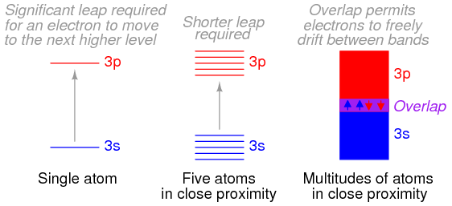
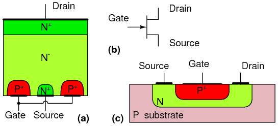

This chapter will cover the physics behind the operation of semiconductor devices and show how these principles are applied in several different types of semiconductor devices. Subsequent chapters will deal primarily with the practical aspects of these devices in circuits and omit theory as much as possible.
“I think it is safe to say that no one understands quantum mechanics.”
Physicist Richard P. Feynman
To say that the invention of semiconductor devices was a revolution would not be an exaggeration. Not only was this an impressive technological accomplishment, but it paved the way for developments that would indelibly alter modern society. Semiconductor devices made possible miniaturized electronics, including computers, certain types of medical diagnostic and treatment equipment, and popular telecommunication devices, to name a few applications of this technology.
But behind this revolution in technology stands an even greater revolution in general science: the field of quantum physics. Without this leap in understanding the natural world, the development of semiconductor devices (and more advanced electronic devices still under development) would never have been possible. Quantum physics is an incredibly complicated realm of science. This chapter is but a brief overview. When scientists of Feynman's caliber say that “no one understands [it],” you can be sure it is a complex subject. Without a basic understanding of quantum physics, or at least an understanding of the scientific discoveries that led to its formulation, though, it is impossible to understand how and why semiconductor electronic devices function. Most introductory electronics textbooks I've read try to explain semiconductors in terms of “classical” physics, resulting in more confusion than comprehension.
Many of us have seen diagrams of atoms that look something like Figure below.
Rutherford atom: negative electrons orbit a small positive nucleus.
Tiny particles of matter called protons and neutrons make up the center of the atom; electrons orbit like planets around a star. The nucleus carries a positive electrical charge, owing to the presence of protons (the neutrons have no electrical charge whatsoever), while the atom's balancing negative charge resides in the orbiting electrons. The negative electrons are attracted to the positive protons just as planets are gravitationally attracted by the Sun, yet the orbits are stable because of the electrons' motion. We owe this popular model of the atom to the work of Ernest Rutherford, who around the year 1911 experimentally determined that atoms' positive charges were concentrated in a tiny, dense core rather than being spread evenly about the diameter as was proposed by an earlier researcher, J.J. Thompson.
Rutherford's scattering experiment involved bombarding a thin gold foil with positively charged alpha particles as in Figure below. Young graduate students H. Geiger and E. Marsden experienced unexpected results. A few Alpha particles were deflected at large angles. A few Alpha particles were back-scattering, recoiling at nearly 180o. Most of the particles passed through the gold foil undeflected, indicating that the foil was mostly empty space. The fact that a few alpha particles experienced large deflections indicated the presence of a minuscule positively charged nucleus.
Rutherford scattering: a beam of alpha particles is scattered by a thin gold foil.
Although Rutherford's atomic model accounted for experimental data better than Thompson's, it still wasn't perfect. Further attempts at defining atomic structure were undertaken, and these efforts helped pave the way for the bizarre discoveries of quantum physics. Today our understanding of the atom is quite a bit more complex. Nevertheless, despite the revolution of quantum physics and its contribution to our understanding of atomic structure, Rutherford's solar-system picture of the atom embedded itself in the popular consciousness to such a degree that it persists in some areas of study even when inappropriate.
Consider this short description of electrons in an atom, taken from a popular electronics textbook:
Orbiting negative electrons are therefore attracted toward the positive nucleus, which leads us to the question of why the electrons do not fly into the atom's nucleus. The answer is that the orbiting electrons remain in their stable orbit because of two equal but opposite forces. The centrifugal outward force exerted on the electrons because of the orbit counteracts the attractive inward force (centripetal) trying to pull the electrons toward the nucleus because of the unlike charges.
In keeping with the Rutherford model, this author casts the electrons as solid chunks of matter engaged in circular orbits, their inward attraction to the oppositely charged nucleus balanced by their motion. The reference to “centrifugal force” is technically incorrect (even for orbiting planets), but is easily forgiven because of its popular acceptance: in reality, there is no such thing as a force pushing any orbiting body away from its center of orbit. It seems that way because a body's inertia tends to keep it traveling in a straight line, and since an orbit is a constant deviation (acceleration) from straight-line travel, there is constant inertial opposition to whatever force is attracting the body toward the orbit center (centripetal), be it gravity, electrostatic attraction, or even the tension of a mechanical link.
The real problem with this explanation, however, is the idea of electrons traveling in circular orbits in the first place. It is a verifiable fact that accelerating electric charges emit electromagnetic radiation, and this fact was known even in Rutherford's time. Since orbiting motion is a form of acceleration (the orbiting object in constant acceleration away from normal, straight-line motion), electrons in an orbiting state should be throwing off radiation like mud from a spinning tire. Electrons accelerated around circular paths in particle accelerators called synchrotrons are known to do this, and the result is called synchrotron radiation. If electrons were losing energy in this way, their orbits would eventually decay, resulting in collisions with the positively charged nucleus. Nevertheless, this doesn't ordinarily happen within atoms. Indeed, electron “orbits” are remarkably stable over a wide range of conditions.
Furthermore, experiments with “excited” atoms demonstrated that electromagnetic energy emitted by an atom only occurs at certain, definite frequencies. Atoms that are “excited” by outside influences such as light are known to absorb that energy and return it as electromagnetic waves of specific frequencies, like a tuning fork that rings at a fixed pitch no matter how it is struck. When the light emitted by an excited atom is divided into its constituent frequencies (colors) by a prism, distinct lines of color appear in the spectrum, the pattern of spectral lines being unique to that element. This phenomenon is commonly used to identify atomic elements, and even measure the proportions of each element in a compound or chemical mixture. According to Rutherford's solar-system atomic model (regarding electrons as chunks of matter free to orbit at any radius) and the laws of classical physics, excited atoms should return energy over a virtually limitless range of frequencies rather than a select few. In other words, if Rutherford's model were correct, there would be no “tuning fork” effect, and the light spectrum emitted by any atom would appear as a continuous band of colors rather than as a few distinct lines.
Bohr hydrogen atom (with orbits drawn to scale) only allows electrons to inhabit discrete orbitals. Electrons falling from n=3,4,5, or 6 to n=2 accounts for Balmer series of spectral lines.
A pioneering researcher by the name of Niels Bohr attempted to improve upon Rutherford's model after studying in Rutherford's laboratory for several months in 1912. Trying to harmonize the findings of other physicists (most notably, Max Planck and Albert Einstein), Bohr suggested that each electron had a certain, specific amount of energy, and that their orbits were quantized such that each may occupy certain places around the nucleus, as marbles fixed in circular tracks around the nucleus rather than the free-ranging satellites each were formerly imagined to be. (Figure above) In deference to the laws of electromagnetics and accelerating charges, Bohr alluded to these “orbits” as stationary states to escape the implication that they were in motion.
Although Bohr's ambitious attempt at re-framing the structure of the atom in terms that agreed closer to experimental results was a milestone in physics, it was not complete. His mathematical analysis produced better predictions of experimental events than analyses belonging to previous models, but there were still some unanswered questions about why electrons should behave in such strange ways. The assertion that electrons existed in stationary, quantized states around the nucleus accounted for experimental data better than Rutherford's model, but he had no idea what would force electrons to manifest those particular states. The answer to that question had to come from another physicist, Louis de Broglie, about a decade later.
De Broglie proposed that electrons, as photons (particles of light) manifested both particle-like and wave-like properties. Building on this proposal, he suggested that an analysis of orbiting electrons from a wave perspective rather than a particle perspective might make more sense of their quantized nature. Indeed, another breakthrough in understanding was reached.
String vibrating at resonant frequency between two fixed points forms standing wave.
The atom according to de Broglie consisted of electrons existing as standing waves, a phenomenon well known to physicists in a variety of forms. As the plucked string of a musical instrument (Figure above) vibrating at a resonant frequency, with “nodes” and “antinodes” at stable positions along its length. De Broglie envisioned electrons around atoms standing as waves bent around a circle as in Figure below.
“Orbiting” electron as standing wave around the nucleus, (a) two cycles per orbit, (b) three cycles per orbit.
Electrons only could exist in certain, definite “orbits” around the nucleus because those were the only distances where the wave ends would match. In any other radius, the wave should destructively interfere with itself and thus cease to exist.
De Broglie's hypothesis gave both mathematical support and a convenient physical analogy to account for the quantized states of electrons within an atom, but his atomic model was still incomplete. Within a few years, though, physicists Werner Heisenberg and Erwin Schrodinger, working independently of each other, built upon de Broglie's concept of a matter-wave duality to create more mathematically rigorous models of subatomic particles.
This theoretical advance from de Broglie's primitive standing wave model to Heisenberg's matrix and Schrodinger's differential equation models was given the name quantum mechanics, and it introduced a rather shocking characteristic to the world of subatomic particles: the trait of probability, or uncertainty. According to the new quantum theory, it was impossible to determine the exact position and exact momentum of a particle at the same time. The popular explanation of this “uncertainty principle” was that it was a measurement error (i.e. by attempting to precisely measure the position of an electron, you interfere with its momentum and thus cannot know what it was before the position measurement was taken, and vice versa). The startling implication of quantum mechanics is that particles do not actually have precise positions and momenta, but rather balance the two quantities in a such way that their combined uncertainties never diminish below a certain minimum value.
This form of “uncertainty” relationship exists in areas other than quantum mechanics. As discussed in the “Mixed-Frequency AC Signals” chapter in volume II of this book series, there is a mutually exclusive relationship between the certainty of a waveform's time-domain data and its frequency-domain data. In simple terms, the more precisely we know its constituent frequency(ies), the less precisely we know its amplitude in time, and vice versa. To quote myself:
A waveform of infinite duration (infinite number of cycles) can be analyzed with absolute precision, but the less cycles available to the computer for analysis, the less precise the analysis. . . The fewer times that a wave cycles, the less certain its frequency is. Taking this concept to its logical extreme, a short pulse -- a waveform that doesn't even complete a cycle -- actually has no frequency, but rather acts as an infinite range of frequencies. This principle is common to all wave-based phenomena, not just AC voltages and currents.
In order to precisely determine the amplitude of a varying signal, we must sample it over a very narrow span of time. However, doing this limits our view of the wave's frequency. Conversely, to determine a wave's frequency with great precision, we must sample it over many cycles, which means we lose view of its amplitude at any given moment. Thus, we cannot simultaneously know the instantaneous amplitude and the overall frequency of any wave with unlimited precision. Stranger yet, this uncertainty is much more than observer imprecision; it resides in the very nature of the wave. It is not as though it would be possible, given the proper technology, to obtain precise measurements of both instantaneous amplitude and frequency at once. Quite literally, a wave cannot have both a precise, instantaneous amplitude, and a precise frequency at the same time.
The minimum uncertainty of a particle's position and momentum expressed by Heisenberg and Schrodinger has nothing to do with limitation in measurement; rather it is an intrinsic property of the particle's matter-wave dual nature. Electrons, therefore, do not really exist in their “orbits” as precisely defined bits of matter, or even as precisely defined waveshapes, but rather as “clouds” -- the technical term is wavefunction -- of probability distribution, as if each electron were “spread” or “smeared” over a range of positions and momenta.
This radical view of electrons as imprecise clouds at first seems to contradict the original principle of quantized electron states: that electrons exist in discrete, defined “orbits” around atomic nuclei. It was, after all, this discovery that led to the formation of quantum theory to explain it. How odd it seems that a theory developed to explain the discrete behavior of electrons ends up declaring that electrons exist as “clouds” rather than as discrete pieces of matter. However, the quantized behavior of electrons does not depend on electrons having definite position and momentum values, but rather on other properties called quantum numbers. In essence, quantum mechanics dispenses with commonly held notions of absolute position and absolute momentum, and replaces them with absolute notions of a sort having no analogue in common experience.
Even though electrons are known to exist in ethereal, “cloud-like” forms of distributed probability rather than as discrete chunks of matter, those “clouds” have other characteristics that are discrete. Any electron in an atom can be described by four numerical measures (the previously mentioned quantum numbers), called the Principal, Angular Momentum, Magnetic, and Spin numbers. The following is a synopsis of each of these numbers' meanings:
Principal Quantum Number: Symbolized by the letter n, this number describes the shell that an electron resides in. An electron “shell” is a region of space around an atom's nucleus that electrons are allowed to exist in, corresponding to the stable “standing wave” patterns of de Broglie and Bohr. Electrons may “leap” from shell to shell, but cannot exist between the shell regions.
The principal quantum number must be a positive integer (a whole number, greater than or equal to 1). In other words, principal quantum number for an electron cannot be 1/2 or -3. These integer values were not arrived at arbitrarily, but rather through experimental evidence of light spectra: the differing frequencies (colors) of light emitted by excited hydrogen atoms follow a sequence mathematically dependent on specific, integer values as illustrated in Figure previous.
Each shell has the capacity to hold multiple electrons. An analogy for electron shells is the concentric rows of seats of an amphitheater. Just as a person seated in an amphitheater must choose a row to sit in (one cannot sit between rows), electrons must “choose” a particular shell to “sit” in. As in amphitheater rows, the outermost shells hold more electrons than the inner shells. Also, electrons tend to seek the lowest available shell, as people in an amphitheater seek the closest seat to the center stage. The higher the shell number, the greater the energy of the electrons in it.
The maximum number of electrons that any shell may hold is described by the equation 2n2, where “n” is the principal quantum number. Thus, the first shell (n=1) can hold 2 electrons; the second shell (n=2) 8 electrons, and the third shell (n=3) 18 electrons. (Figure below)
Principal quantum number n and maximum number of electrons per shell both predicted by 2(n2), and observed. Orbitals not to scale.
Electron shells in an atom were formerly designated by letter rather than by number. The first shell (n=1) was labeled K, the second shell (n=2) L, the third shell (n=3) M, the fourth shell (n=4) N, the fifth shell (n=5) O, the sixth shell (n=6) P, and the seventh shell (n=7) Q.
Angular Momentum Quantum Number: A shell, is composed of subshells. One might be inclined to think of subshells as simple subdivisions of shells, as lanes dividing a road. The subshells are much stranger. Subshells are regions of space where electron “clouds” are allowed to exist, and different subshells actually have different shapes. The first subshell is shaped like a sphere, (Figure below(s) ) which makes sense when visualized as a cloud of electrons surrounding the atomic nucleus in three dimensions. The second subshell, however, resembles a dumbbell, comprised of two “lobes” joined together at a single point near the atom's center. (Figure below(p) ) The third subshell typically resembles a set of four “lobes” clustered around the atom's nucleus. These subshell shapes are reminiscent of graphical depictions of radio antenna signal strength, with bulbous lobe-shaped regions extending from the antenna in various directions. (Figure below(d) )
Orbitals: (s) Three fold symmetry. (p) Shown: px, one of three possible orientations (px, py, pz ), about their respective axes. (d) Shown: dx2-y2 similar to dxy, dyz, dxz. Shown: dz2. Possible d-orbital orientations: five.
Valid angular momentum quantum numbers are positive integers like principal quantum numbers, but also include zero. These quantum numbers for electrons are symbolized by the letter l. The number of subshells in a shell is equal to the shell's principal quantum number. Thus, the first shell (n=1) has one subshell, numbered 0; the second shell (n=2) has two subshells, numbered 0 and 1; the third shell (n=3) has three subshells, numbered 0, 1, and 2.
An older convention for subshell description used letters rather than numbers. In this notation, the first subshell (l=0) was designated s, the second subshell (l=1) designated p, the third subshell (l=2) designated d, and the fourth subshell (l=3) designated f. The letters come from the words sharp, principal (not to be confused with the principal quantum number, n), diffuse, and fundamental. You will still see this notational convention in many periodic tables, used to designate the electron configuration of the atoms' outermost, or valence, shells. (Figure below)
(a) Bohr representation of Silver atom, (b) Subshell representation of Ag with division of shells into subshells (angular quantum number l). This diagram implies nothing about the actual position of electrons, but represents energy levels.
Magnetic Quantum Number: The magnetic quantum number for an electron classifies which orientation its subshell shape is pointed. The “lobes” for subshells point in multiple directions. These different orientations are called orbitals. For the first subshell (s; l=0), which resembles a sphere pointing in no “direction”, so there is only one orbital. For the second (p; l=1) subshell in each shell, which resembles dumbbells point in three possible directions. Think of three dumbbells intersecting at the origin, each oriented along a different axis in a three-axis coordinate space.
Valid numerical values for this quantum number consist of integers ranging from -l to l, and are symbolized as ml in atomic physics and lz in nuclear physics. To calculate the number of orbitals in any given subshell, double the subshell number and add 1, (2·l + 1). For example, the first subshell (l=0) in any shell contains a single orbital, numbered 0; the second subshell (l=1) in any shell contains three orbitals, numbered -1, 0, and 1; the third subshell (l=2) contains five orbitals, numbered -2, -1, 0, 1, and 2; and so on.
Like principal quantum numbers, the magnetic quantum number arose directly from experimental evidence: The Zeeman effect, the division of spectral lines by exposing an ionized gas to a magnetic field, hence the name “magnetic” quantum number.
Spin Quantum Number: Like the magnetic quantum number, this property of atomic electrons was discovered through experimentation. Close observation of spectral lines revealed that each line was actually a pair of very closely-spaced lines, and this so-called fine structure was hypothesized to result from each electron “spinning” on an axis as if a planet. Electrons with different “spins” would give off slightly different frequencies of light when excited. The name “spin” was assigned to this quantum number. The concept of a spinning electron is now obsolete, being better suited to the (incorrect) view of electrons as discrete chunks of matter rather than as “clouds”; but, the name remains.
Spin quantum numbers are symbolized as ms in atomic physics and sz in nuclear physics. For each orbital in each subshell in each shell, there may be two electrons, one with a spin of +1/2 and the other with a spin of -1/2.
The physicist Wolfgang Pauli developed a principle explaining the ordering of electrons in an atom according to these quantum numbers. His principle, called the Pauli exclusion principle, states that no two electrons in the same atom may occupy the exact same quantum states. That is, each electron in an atom has a unique set of quantum numbers. This limits the number of electrons that may occupy any given orbital, subshell, and shell.
Shown here is the electron arrangement for a hydrogen atom:
With one proton in the nucleus, it takes one electron to electrostatically balance the atom (the proton's positive electric charge exactly balanced by the electron's negative electric charge). This one electron resides in the lowest shell (n=1), the first subshell (l=0), in the only orbital (spatial orientation) of that subshell (ml=0), with a spin value of 1/2. A common method of describing this organization is by listing the electrons according to their shells and subshells in a convention called spectroscopic notation. In this notation, the shell number is shown as an integer, the subshell as a letter (s,p,d,f), and the total number of electrons in the subshell (all orbitals, all spins) as a superscript. Thus, hydrogen, with its lone electron residing in the base level, is described as 1s1.
Proceeding to the next atom (in order of atomic number), we have the element helium:

A helium atom has two protons in the nucleus, and this necessitates two electrons to balance the double-positive electric charge. Since two electrons -- one with spin=1/2 and the other with spin=-1/2 -- fit into one orbital, the electron configuration of helium requires no additional subshells or shells to hold the second electron.
However, an atom requiring three or more electrons will require additional subshells to hold all electrons, since only two electrons will fit into the lowest shell (n=1). Consider the next atom in the sequence of increasing atomic numbers, lithium:
An atom of lithium uses a fraction of the L shell's (n=2) capacity. This shell actually has a total capacity of eight electrons (maximum shell capacity = 2n2 electrons). If we examine the organization of the atom with a completely filled L shell, we will see how all combinations of subshells, orbitals, and spins are occupied by electrons:
Often, when the spectroscopic notation is given for an atom, any shells that are completely filled are omitted, and the unfilled, or the highest-level filled shell, is denoted. For example, the element neon (shown in the previous illustration), which has two completely filled shells, may be spectroscopically described simply as 2p6 rather than 1s22s22p6. Lithium, with its K shell completely filled and a solitary electron in the L shell, may be described simply as 2s1 rather than 1s22s1.
The omission of completely filled, lower-level shells is not just a notational convenience. It also illustrates a basic principle of chemistry: that the chemical behavior of an element is primarily determined by its unfilled shells. Both hydrogen and lithium have a single electron in their outermost shells (1s1 and 2s1, respectively), giving the two elements some similar properties. Both are highly reactive, and reactive in much the same way (bonding to similar elements in similar modes). It matters little that lithium has a completely filled K shell underneath its almost-vacant L shell: the unfilled L shell is the shell that determines its chemical behavior.
Elements having completely filled outer shells are classified as noble, and are distinguished by almost complete non-reactivity with other elements. These elements used to be classified as inert, when it was thought that these were completely unreactive, but are now known to form compounds with other elements under specific conditions.
Since elements with identical electron configurations in their outermost shell(s) exhibit similar chemical properties, Dmitri Mendeleev organized the different elements in a table accordingly. Such a table is known as a periodic table of the elements, and modern tables follow this general form in Figure below.
Periodic table of chemical elements.
Dmitri Mendeleev, a Russian chemist, was the first to develop a periodic table of the elements. Although Mendeleev organized his table according to atomic mass rather than atomic number, and produced a table that was not quite as useful as modern periodic tables, his development stands as an excellent example of scientific proof. Seeing the patterns of periodicity (similar chemical properties according to atomic mass), Mendeleev hypothesized that all elements should fit into this ordered scheme. When he discovered “empty” spots in the table, he followed the logic of the existing order and hypothesized the existence of heretofore undiscovered elements. The subsequent discovery of those elements granted scientific legitimacy to Mendeleev's hypothesis, furthering future discoveries, and leading to the form of the periodic table we use today.
This is how science should work: hypotheses followed to their logical conclusions, and accepted, modified, or rejected as determined by the agreement of experimental data to those conclusions. Any fool may formulate a hypothesis after-the-fact to explain existing experimental data, and many do. What sets a scientific hypothesis apart from post hoc speculation is the prediction of future experimental data yet uncollected, and the possibility of disproof as a result of that data. To boldly follow a hypothesis to its logical conclusion(s) and dare to predict the results of future experiments is not a dogmatic leap of faith, but rather a public test of that hypothesis, open to challenge from anyone able to produce contradictory data. In other words, scientific hypotheses are always “risky” due to the claim to predict the results of experiments not yet conducted, and are therefore susceptible to disproof if the experiments do not turn out as predicted. Thus, if a hypothesis successfully predicts the results of repeated experiments, its falsehood is disproven.
Quantum mechanics, first as a hypothesis and later as a theory, has proven to be extremely successful in predicting experimental results, hence the high degree of scientific confidence placed in it. Many scientists have reason to believe that it is an incomplete theory, though, as its predictions hold true more at micro physical scales than at macroscopic dimensions, but nevertheless it is a tremendously useful theory in explaining and predicting the interactions of particles and atoms.
As you have already seen in this chapter, quantum physics is essential in describing and predicting many different phenomena. In the next section, we will see its significance in the electrical conductivity of solid substances, including semiconductors. Simply put, nothing in chemistry or solid-state physics makes sense within the popular theoretical framework of electrons existing as discrete chunks of matter, whirling around atomic nuclei like miniature satellites. It is when electrons are viewed as “wavefunctions” existing in definite, discrete states that the regular and periodic behavior of matter can be explained.
Valence: The electrons in the outer most shell, or valence shell, are known as valence electrons. These valence electrons are responsible for the chemical properties of the chemical elements. It is these electrons which participate in chemical reactions with other elements. An over simplified chemistry rule applicable to simple reactions is that atoms try to form a complete outer shell of 8 electrons (two for the L shell). Atoms may give away a few electrons to expose an underlying complete shell. Atoms may accept a few electrons to complete the shell. These two processes form ions from atoms. Atoms may even share electrons among atoms in an attempt to complete the outer shell. This process forms molecular bonds. That is, atoms associate to form a molecule.
For example group I elements: Li, Na, K, Cu, Ag, and Au have a single valence electron. (Figure below) These elements all have similar chemical properties. These atoms readily give away one electron to react with other elements. The ability to easily give away an electron makes these elements excellent conductors.
Periodic table group IA elements: Li, Na, and K, and group IB elements: Cu, Ag, and Au have one electron in the outer, or valence, shell, which is readily donated. Inner shell electrons: For n= 1, 2, 3, 4; 2n2 = 2, 8, 18, 32.
Group VIIA elements: Fl, Cl, Br, and I all have 7 electrons in the outer shell. These elements readily accept an electron to fill up the outer shell with a full 8 electrons. (Figure below) If these elements do accept an electron, a negative ion is formed from the neutral atom. These elements which do not give up electrons are insulators.
Periodic table group VIIA elements: F, Cl, Br, and I with 7 valence electrons readily accept an electron in reactions with other elements.
For example, a Cl atom accepts an electron from an Na atom to become a Cl- ion as shown in Figure below. An ion is a charged particle formed from an atom by either donating or accepting an electron. As the Na atom donates an electron, it becomes a Na+ ion. This is how Na and Cl atoms combine to form NaCl, table salt, which is actually Na+Cl-, a pair of ions. The Na+ and Cl- carrying opposite charges, attract one other.
Neutral Sodium atom donates an electron to neutral Chlorine atom forming Na+ and Cl- ions.
Sodium chloride crystallizes in the cubic structure shown in Figure below. This model is not to scale to show the three dimensional structure. The Na+Cl- ions are actually packed similar to layers of stacked marbles. The easily drawn cubic crystal structure illustrates that a solid crystal may contain charged particles.
Group VIIIA elements: He, Ne, Ar, Kr, Xe all have 8 electrons in the valence shell. (Figure below) That is, the valence shell is complete meaning these elements neither donate nor accept electrons. Nor do they readily participate in chemical reactions since group VIIIA elements do not easily combine with other elements. In recent years chemists have forced Xe and Kr to form a few compounds, however for the purposes of our discussion this is not applicable. These elements are good electrical insulators and are gases at room temperature.
Group VIIIA elements: He, Ne, Ar, Kr, Xe are largely unreactive since the valence shell is complete..
Group IVA elements: C, Si, Ge, having 4 electrons in the valence shell as shown in Figure below form compounds by sharing electrons with other elements without forming ions. This shared electron bonding is known as covalent bonding. Note that the center atom (and the others by extension) has completed its valence shell by sharing electrons. Note that the figure is a 2-d representation of bonding, which is actually 3-d. It is this group, IVA, that we are interested in for its semiconducting properties.
(a) Group IVA elements: C, Si, Ge having 4 electrons in the valence shell, (b) complete the valence shell by sharing electrons with other elements.
Crystal structure: Most inorganic substances form their atoms (or ions) into an ordered array known as a crystal. The outer electron clouds of atoms interact in an orderly manner. Even metals are composed of crystals at the microscopic level. If a metal sample is given an optical polish, then acid etched, the microscopic microcrystalline structure shows as in Figure below. It is also possible to purchase, at considerable expense, metallic single crystal specimens from specialized suppliers. Polishing and etching such a specimen discloses no microcrystalline structure. Practically all industrial metals are polycrystalline. Most modern semiconductors, on the other hand, are single crystal devices. We are primarily interested in monocrystalline structures.
(a) Metal sample, (b) polished, (c) acid etched to show microcrystalline structure.
Many metals are soft and easily deformed by the various metal working techniques. The microcrystals are deformed in metal working. Also, the valence electrons are free to move about the crystal lattice, and from crystal to crystal. The valence electrons do not belong to any particular atom, but to all atoms.
The rigid crystal structure in Figure below is composed of a regular repeating pattern of positive Na ions and negative Cl ions. The Na and Cl atoms form Na+ and Cl- ions by transferring an electron from Na to Cl, with no free electrons. Electrons are not free to move about the crystal lattice, a difference compared with a metal. Nor are the ions free. Ions are fixed in place within the crystal structure. Though, the ions are free to move about if the NaCl crystal is dissolved in water. However, the crystal no longer exists. The regular, repeating structure is gone. Evaporation of the water deposits the Na+ and Cl- ions in the form of new crystals as the oppositely charged ions attract each other. Ionic materials form crystal structures due to the strong electrostatic attraction of the oppositely charged ions.
NaCl crystal having a cubic structure.
Semiconductors in Group 14 (formerly part of Group IV) form a tetrahedral bonding pattern utilizing the s and p orbital electrons about the atom, sharing electron-pair bonds to four adjacent atoms. (Figure below(a) ). Group 14 elements have four outer electrons: two in a spherical s-orbital and two in p-orbitals. One of the p-orbitals is unoccupied. The three p-orbitals hybridize with the s-orbital to form four sp3 molecular orbitals. These four electron clouds repel one another to equidistant tetrahedral spacing about the Si atom, attracted by the positive nucleus as shown in Figure below.
One s-orbital and three p-orbital electrons hybridize, forming four sp3 molecular orbitals.
Every semiconductor atom, Si, Ge, or C (diamond) is chemically bonded to four other atoms by covalent bonds, shared electron bonds. Two electrons may share an orbital if each have opposite spin quantum numbers. Thus, an unpaired electron may share an orbital with an electron from another atom. This corresponds to overlapping Figure below(a) of the electron clouds, or bonding. Figure below (b) is one fourth of the volume of the diamond crystal structure unit cell shown in Figure below at the origin. The bonds are particularly strong in diamond, decreasing in strength going down group IV to silicon, and germanium. Silicon and germanium both form crystals with a diamond structure.
(a) Tetrahedral bonding of Si atom. (b) leads to 1/4 of the cubic unit cell
The diamond unit cell is the basic crystal building block. Figure below shows four atoms (dark) bonded to four others within the volume of the cell. This is equivalent to placing one of Figure above(b) at the origin in Figure below, then placing three more on adjacent faces to fill the full cube. Six atoms fall on the middle of each of the six cube faces, showing two bonds. The other two bonds to adjacent cubes were omitted for clarity. Out of eight cube corners, four atoms bond to an atom within the cube. Where are the other four atoms bonded? The other four bond to adjacent cubes of the crystal. Keep in mind that even though four corner atoms show no bonds in the cube, all atoms within the crystal are bonded in one giant molecule. A semiconductor crystal is built up from copies of this unit cell.
Si, Ge, and C (diamond) form interleaved face centered cube.
The crystal is effectively one molecule. An atom covalent bonds to four others, which in turn bond to four others, and so on. The crystal lattice is relatively stiff resisting deformation. Few electrons free themselves for conduction about the crystal. A property of semiconductors is that once an electron is freed, a positively charged empty space develops which also contributes to conduction.
Quantum physics describes the states of electrons in an atom according to the four-fold scheme of quantum numbers. The quantum numbers describe the allowable states electrons may assume in an atom. To use the analogy of an amphitheater, quantum numbers describe how many rows and seats are available. Individual electrons may be described by the combination of quantum numbers, like a spectator in an amphitheater assigned to a particular row and seat.
Like spectators in an amphitheater moving between seats and rows, electrons may change their statuses, given the presence of available spaces for them to fit, and available energy. Since shell level is closely related to the amount of energy that an electron possesses, “leaps” between shell (and even subshell) levels requires transfers of energy. If an electron is to move into a higher-order shell, it requires that additional energy be given to the electron from an external source. Using the amphitheater analogy, it takes an increase in energy for a person to move into a higher row of seats, because that person must climb to a greater height against the force of gravity. Conversely, an electron “leaping” into a lower shell gives up some of its energy, like a person jumping down into a lower row of seats, the expended energy manifesting as heat and sound.
Not all “leaps” are equal. Leaps between different shells require a substantial exchange of energy, but leaps between subshells or between orbitals require lesser exchanges.
When atoms combine to form substances, the outermost shells, subshells, and orbitals merge, providing a greater number of available energy levels for electrons to assume. When large numbers of atoms are close to each other, these available energy levels form a nearly continuous band wherein electrons may move as illustrated in Figure below

Electron band overlap in metallic elements.
It is the width of these bands and their proximity to existing electrons that determines how mobile those electrons will be when exposed to an electric field. In metallic substances, empty bands overlap with bands containing electrons, meaning that electrons of a single atom may move to what would normally be a higher-level state with little or no additional energy imparted. Thus, the outer electrons are said to be “free,” and ready to move at the beckoning of an electric field.
Band overlap will not occur in all substances, no matter how many atoms are close to each other. In some substances, a substantial gap remains between the highest band containing electrons (the so-called valence band) and the next band, which is empty (the so-called conduction band). See Figure below. As a result, valence electrons are “bound” to their constituent atoms and cannot become mobile within the substance without a significant amount of imparted energy. These substances are electrical insulators.
Electron band separation in insulating substances.
Materials that fall within the category of semiconductors have a narrow gap between the valence and conduction bands. Thus, the amount of energy required to motivate a valence electron into the conduction band where it becomes mobile is quite modest. (Figure below)
Electron band separation in semiconducting substances, (a) multitudes of semiconducting close atoms still results in a significant band gap, (b) multitudes of close metal atoms for reference.
At low temperatures, little thermal energy is available to push valence electrons across this gap, and the semiconducting material acts more as an insulator. At higher temperatures, though, the ambient thermal energy becomes enough to force electrons across the gap, and the material will increase conduction of electricity.
It is difficult to predict the conductive properties of a substance by examining the electron configurations of its constituent atoms. Although the best metallic conductors of electricity (silver, copper, and gold) all have outer s subshells with a single electron, the relationship between conductivity and valence electron count is not necessarily consistent:
The electron band configurations produced by compounds of different elements defies easy association with the electron configurations of its constituent elements.
Pure semiconductors are relatively good insulators as compared with metals, though not nearly as good as a true insulator like glass. To be useful in semiconductor applications, the intrinsic semiconductor (pure undoped semiconductor) must have no more than one impurity atom in 10 billion semiconductor atoms. This is analogous to a grain of salt impurity in a railroad boxcar of sugar. Impure, or dirty semiconductors are considerably more conductive, though not as good as metals. Why might this be? To answer that question, we must look at the electron structure of such materials in Figure below.
Figure below (a) shows four electrons in the valence shell of a semiconductor forming covalent bonds to four other atoms. This is a flattened, easier to draw, version of Figure above. All electrons of an atom are tied up in four covalent bonds, pairs of shared electrons. Electrons are not free to move about the crystal lattice. Thus, intrinsic, pure, semiconductors are relatively good insulators as compared to metals.
(a) Intrinsic semiconductor is an insulator having a complete electron shell. (b) However, thermal energy can create few electron hole pairs resulting in weak conduction.
Thermal energy may occasionally free an electron from the crystal lattice as in Figure above (b). This electron is free for conduction about the crystal lattice. When the electron was freed, it left an empty spot with a positive charge in the crystal lattice known as a hole. This hole is not fixed to the lattice; but, is free to move about. The free electron and hole both contribute to conduction about the crystal lattice. That is, the electron is free until it falls into a hole. This is called recombination. If an external electric field is applied to the semiconductor, the electrons and holes will conduct in opposite directions. Increasing temperature will increase the number of electrons and holes, decreasing the resistance. This is opposite of metals, where resistance increases with temperature by increasing the collisions of electrons with the crystal lattice. The number of electrons and holes in an intrinsic semiconductor are equal. However, both carriers do not necessarily move with the same velocity with the application of an external field. Another way of stating this is that the mobility is not the same for electrons and holes.
Pure semiconductors, by themselves, are not particularly useful. Though, semiconductors must be refined to a high level of purity as a starting point prior the addition of specific impurities.
Semiconductor material pure to 1 part in 10 billion, may have specific impurities added at approximately 1 part per 10 million to increase the number of carriers. The addition of a desired impurity to a semiconductor is known as doping. Doping increases the conductivity of a semiconductor so that it is more comparable to a metal than an insulator.
It is possible to increase the number of negative charge carriers within the semiconductor crystal lattice by doping with an electron donor like Phosphorus. Electron donors, also known as N-type dopants include elements from group VA of the periodic table: nitrogen, phosphorus, arsenic, and antimony. Nitrogen and phosphorus are N-type dopants for diamond. Phosphorus, arsenic, and antimony are used with silicon.
The crystal lattice in Figure below (b) contains atoms having four electrons in the outer shell, forming four covalent bonds to adjacent atoms. This is the anticipated crystal lattice. The addition of a phosphorus atom with five electrons in the outer shell introduces an extra electron into the lattice as compared with the silicon atom. The pentavalent impurity forms four covalent bonds to four silicon atoms with four of the five electrons, fitting into the lattice with one electron left over. Note that this spare electron is not strongly bonded to the lattice as the electrons of normal Si atoms are. It is free to move about the crystal lattice, not being bound to the Phosphorus lattice site. Since we have doped at one part phosphorus in 10 million silicon atoms, few free electrons were created compared with the numerous silicon atoms. However, many electrons were created compared with the fewer electron-hole pairs in intrinsic silicon. Application of an external electric field produces strong conduction in the doped semiconductor in the conduction band (above the valence band). A heavier doping level produces stronger conduction. Thus, a poorly conducting intrinsic semiconductor has been converted into a good electrical conductor.
(a) Outer shell electron configuration of donor N-type Phosphorus, Silicon (for reference), and acceptor P-type Boron. (b) N-type donor impurity creates free electron (c) P-type acceptor impurity creates hole, a positive charge carrier.
It is also possible to introduce an impurity lacking an electron as compared with silicon, having three electrons in the valence shell as compared with four for silicon. In Figure above (c), this leaves an empty spot known as a hole, a positive charge carrier. The boron atom tries to bond to four silicon atoms, but only has three electrons in the valence band. In attempting to form four covalent bonds the three electrons move around trying to form four bonds. This makes the hole appear to move. Furthermore, the trivalent atom may borrow an electron from an adjacent (or more distant) silicon atom to form four covalent bonds. However, this leaves the silicon atom deficient by one electron. In other words, the hole has moved to an adjacent (or more distant) silicon atom. Holes reside in the valence band, a level below the conduction band. Doping with an electron acceptor, an atom which may accept an electron, creates a deficiency of electrons, the same as an excess of holes. Since holes are positive charge carriers, an electron acceptor dopant is also known as a P-type dopant. The P-type dopant leaves the semiconductor with an excess of holes, positive charge carriers. The P-type elements from group IIIA of the periodic table include: boron, aluminum, gallium, and indium. Boron is used as a P-type dopant for silicon and diamond semiconductors, while indium is used with germanium.
The “marble in a tube” analogy to electron conduction in Figure below relates the movement of holes with the movement of electrons. The marble represent electrons in a conductor, the tube. The movement of electrons from left to right as in a wire or N-type semiconductor is explained by an electron entering the tube at the left forcing the exit of an electron at the right. Conduction of N-type electrons occurs in the conduction band. Compare that with the movement of a hole in the valence band.
Marble in a tube analogy: (a) Electrons move right in the conduction band as electrons enter tube. (b) Hole moves right in the valence band as electrons move left.
For a hole to enter at the left of Figure above (b), an electron must be removed. When moving a hole left to right, the electron must be moved right to left. The first electron is ejected from the left end of the tube so that the hole may move to the right into the tube. The electron is moving in the opposite direction of the positive hole. As the hole moves farther to the right, electrons must move left to accommodate the hole. The hole is the absence of an electron in the valence band due to P-type doping. It has a localized positive charge. To move the hole in a given direction, the valence electrons move in the opposite direction.
Electron flow in an N-type semiconductor is similar to electrons moving in a metallic wire. The N-type dopant atoms will yield electrons available for conduction. These electrons, due to the dopant are known as majority carriers, for they are in the majority as compared to the very few thermal holes. If an electric field is applied across the N-type semiconductor bar in Figure below (a), electrons enter the negative (left) end of the bar, traverse the crystal lattice, and exit at right to the (+) battery terminal.
(a) N-type semiconductor with electrons moving left to right through the crystal lattice. (b) P-type semiconductor with holes moving left to right, which corresponds to electrons moving in the opposite direction.
Current flow in a P-type semiconductor is a little more difficult to explain. The P-type dopant, an electron acceptor, yields localized regions of positive charge known as holes. The majority carrier in a P-type semiconductor is the hole. While holes form at the trivalent dopant atom sites, they may move about the semiconductor bar. Note that the battery in Figure above (b) is reversed from (a). The positive battery terminal is connected to the left end of the P-type bar. Electron flow is out of the negative battery terminal, through the P-type bar, returning to the positive battery terminal. An electron leaving the positive (left) end of the semiconductor bar for the positive battery terminal leaves a hole in the semiconductor, that may move to the right. Holes traverse the crystal lattice from left to right. At the negative end of the bar an electron from the battery combines with a hole, neutralizing it. This makes room for another hole to move in at the positive end of the bar toward the right. Keep in mind that as holes move left to right, that it is actually electrons moving in the opposite direction that is responsible for the apparant hole movement.
The elements used to produce semiconductors are summarized in Figure below. The oldest group IVA bulk semiconductor material germanium is only used to a limited extent today. Silicon based semiconductors account for about 90% of commercial production of all semiconductors. Diamond based semiconductors are a research and development activity with considerable potential at this time. Compound semiconductors not listed include silicon germanium (thin layers on Si wafers), silicon carbide and III-V compounds such as gallium arsenide. III-VI compound semiconductors include: AlN, GaN, InN, AlP, AlAs, AlSb, GaP, GaAs, GaSb, InP, InAs, InSb, AlxGa1-xAs and InxGa1-xAs. Columns II and VI of periodic table, not shown in the figure, also form compound semiconductors.
Group IIIA P-type dopants, group IV basic semiconductor materials, and group VA N-type dopants.
The main reason for the inclusion of the IIIA and VA groups in Figure above is to show the dopants used with the group IVA semiconductors. Group IIIA elements are acceptors, P-type dopants, which accept electrons leaving a hole in the crystal lattice, a positive carrier. Boron is the P-type dopant for diamond, and the most common dopant for silicon semiconductors. Indium is the P-type dopant for germanium.
Group VA elements are donors, N-type dopants, yielding a free electron. Nitrogen and Phosphorus are suitable N-type dopants for diamond. Phosphorus and arsenic are the most commonly used N-type dopants for silicon; though, antimony can be used.
If a block of P-type semiconductor is placed in contact with a block of N-type semiconductor in Figure below(a), the result is of no value. We have two conductive blocks in contact with each other, showing no unique properties. The problem is two separate and distinct crystal bodies. The number of electrons is balanced by the number of protons in both blocks. Thus, neither block has any net charge.
However, a single semiconductor crystal manufactured with P-type material at one end and N-type material at the other in Figure below (b) has some unique properties. The P-type material has positive majority charge carriers, holes, which are free to move about the crystal lattice. The N-type material has mobile negative majority carriers, electrons. Near the junction, the N-type material electrons diffuse across the junction, combining with holes in P-type material. The region of the P-type material near the junction takes on a net negative charge because of the electrons attracted. Since electrons departed the N-type region, it takes on a localized positive charge. The thin layer of the crystal lattice between these charges has been depleted of majority carriers, thus, is known as the depletion region. It becomes nonconductive intrinsic semiconductor material. In effect, we have nearly an insulator separating the conductive P and N doped regions.
(a) Blocks of P and N semiconductor in contact have no exploitable properties. (b) Single crystal doped with P and N type impurities develops a potential barrier.
This separation of charges at the PN junction constitutes a potential barrier. This potential barrier must be overcome by an external voltage source to make the junction conduct. The formation of the junction and potential barrier happens during the manufacturing process. The magnitude of the potential barrier is a function of the materials used in manufacturing. Silicon PN junctions have a higher potential barrier than germanium junctions.
In Figure below(a) the battery is arranged so that the negative terminal supplies electrons to the N-type material. These electrons diffuse toward the junction. The positive terminal removes electrons from the P-type semiconductor, creating holes that diffuse toward the junction. If the battery voltage is great enough to overcome the junction potential (0.6V in Si), the N-type electrons and P-holes combine annihilating each other. This frees up space within the lattice for more carriers to flow toward the junction. Thus, currents of N-type and P-type majority carriers flow toward the junction. The recombination at the junction allows a battery current to flow through the PN junction diode. Such a junction is said to be forward biased.
(a) Forward battery bias repels carriers toward junction, where recombination results in battery current. (b) Reverse battery bias attracts carriers toward battery terminals, away from junction. Depletion region thickness increases. No sustained battery current flows.
If the battery polarity is reversed as in Figure above(b) majority carriers are attracted away from the junction toward the battery terminals. The positive battery terminal attracts N-type majority carriers, electrons, away from the junction. The negative terminal attracts P-type majority carriers, holes, away from the junction. This increases the thickness of the nonconducting depletion region. There is no recombination of majority carriers; thus, no conduction. This arrangement of battery polarity is called reverse bias.
The diode schematic symbol is illustrated in Figure below(b) corresponding to the doped semiconductor bar at (a). The diode is a unidirectional device. Electron current only flows in one direction, against the arrow, corresponding to forward bias. The cathode, bar, of the diode symbol corresponds to N-type semiconductor. The anode, arrow, corresponds to the P-type semiconductor. To remember this relationship, Not-pointing (bar) on the symbol corresponds to N-type semiconductor. Pointing (arrow) corresponds to P-type.
(a) Forward biased PN junction, (b) Corresponding diode schematic symbol (c) Silicon Diode I vs V characteristic curve.
If a diode is forward biased as in Figure above(a), current will increase slightly as voltage is increased from 0 V. In the case of a silicon diode a measurable current flows when the voltage approaches 0.6 V in Figure above(c). As the voltage increases past 0.6 V, current increases considerably after the knee. Increasing the voltage well beyond 0.7 V may result in high enough current to destroy the diode. The forward voltage, VF, is a characteristic of the semiconductor: 0.6 to 0.7 V for silicon, 0.2 V for germanium, a few volts for Light Emitting Diodes (LED). The forward current ranges from a few mA for point contact diodes to 100 mA for small signal diodes to tens or thousands of amperes for power diodes.
If the diode is reverse biased, only the leakage current of the intrinsic semiconductor flows. This is plotted to the left of the origin in Figure above(c). This current will only be as high as 1 µA for the most extreme conditions for silicon small signal diodes. This current does not increase appreciably with increasing reverse bias until the diode breaks down. At breakdown, the current increases so greatly that the diode will be destroyed unless a high series resistance limits current. We normally select a diode with a higher reverse voltage rating than any applied voltage to prevent this. Silicon diodes are typically available with reverse break down ratings of 50, 100, 200, 400, 800 V and higher. It is possible to fabricate diodes with a lower rating of a few volts for use as voltage standards.
We previously mentioned that the reverse leakage current of under a µA for silicon diodes was due to conduction of the intrinsic semiconductor. This is the leakage that can be explained by theory. Thermal energy produces few electron hole pairs, which conduct leakage current until recombination. In actual practice this predictable current is only part of the leakage current. Much of the leakage current is due to surface conduction, related to the lack of cleanliness of the semiconductor surface. Both leakage currents increase with increasing temperature, approaching a µA for small silicon diodes.
For germanium, the leakage current is orders of magnitude higher. Since germanium semiconductors are rarely used today, this is not a problem in practice.
There were some historic crude, but usable semiconductor rectifiers before high purity materials were available. Ferdinand Braun invented a lead sulfide, PbS, based point contact rectifier in 1874. Cuprous oxide rectifiers were used as power rectifiers in 1924. The forward voltage drop is 0.2 V. The linear characteristic curve perhaps is why Cu2O was used as a rectifier for the AC scale on D'Arsonval based multimeters. This diode is also photosensitive.
Selenium oxide rectifiers were used before modern power diode rectifiers became available. These and the Cu2O rectifiers were polycrystalline devices. Photoelectric cells were once made from Selenium.
Before the modern semiconductor era, an early diode application was as a radio frequency detector, which recovered audio from a radio signal. The “semiconductor” was a polycrystalline piece of the mineral galena, lead sulfide, PbS. A pointed metallic wire known as a cat whisker was brought in contact with a spot on a crystal within the polycrystalline mineral. (Figure below) The operator labored to find a “sensitive” spot on the galena by moving the cat whisker about. Presumably there were P and N-type spots randomly distributed throughout the crystal due to the variability of uncontrolled impurities. Less often the mineral iron pyrites, fools gold, was used, as was the mineral carborundum, silicon carbide, SiC, another detector, part of a foxhole radio, consisted of a sharpened pencil lead bound to a bent safety pin, touching a rusty blue-blade disposable razor blade. These all required searching for a sensitive spot, easily lost because of vibration.
Crystal detector
Replacing the mineral with an N-doped semiconductor (Figure below(a) ) makes the whole surface sensitive, so that searching for a sensitive spot was no longer required. This device was perfected by G.W.Pickard in 1906. The pointed metal contact produced a localized P-type region within the semiconductor. The metal point was fixed in place, and the whole point contact diode encapsulated in a cylindrical body for mechanical and electrical stability. (Figure below(d) ) Note that the cathode bar on the schematic corresponds to the bar on the physical package.
Silicon point contact diodes made an important contribution to radar in World War II, detecting giga-hertz radio frequency echo signals in the radar receiver. The concept to be made clear is that the point contact diode preceded the junction diode and modern semiconductors by several decades. Even to this day, the point contact diode is a practical means of microwave frequency detection because of its low capacitance. Germanium point contact diodes were once more readily available than they are today, being preferred for the lower 0.2 V forward voltage in some applications like self-powered crystal radios. Point contact diodes, though sensitive to a wide bandwidth, have a low current capability compared with junction diodes.
Silicon diode cross-section: (a) point contact diode, (b) junction diode, (c) schematic symbol, (d) small signal diode package.
Most diodes today are silicon junction diodes. The cross-section in Figure above(b) looks a bit more complex than a simple PN junction; though, it is still a PN junction. Starting at the cathode connection, the N+ indicates this region is heavily doped, having nothing to do with polarity. This reduces the series resistance of the diode. The N- region is lightly doped as indicated by the (-). Light doping produces a diode with a higher reverse breakdown voltage, important for high voltage power rectifier diodes. Lower voltage diodes, even low voltage power rectifiers, would have lower forward losses with heavier doping. The heaviest level of doping produce zener diodes designed for a low reverse breakdown voltage. However, heavy doping increases the reverse leakage current. The P+ region at the anode contact is heavily doped P-type semiconductor, a good contact strategy. Glass encapsulated small signal junction diodes are capable of 10's to 100's of mA of current. Plastic or ceramic encapsulated power rectifier diodes handle to 1000's of amperes of current.
The bipolar junction transistor (BJT) was named because its operation involves conduction by two carriers: electrons and holes in the same crystal. The first bipolar transistor was invented at Bell Labs by William Shockley, Walter Brattain, and John Bardeen so late in 1947 that it was not published until 1948. Thus, many texts differ as to the date of invention. Brattain fabricated a germanium point contact transistor, bearing some resemblance to a point contact diode. Within a month, Shockley had a more practical junction transistor, which we describe in following paragraphs. They were awarded the Nobel Prize in Physics in 1956 for the transistor.
The bipolar junction transistor shown in Figure below(a) is an NPN three layer semiconductor sandwich with an emitter and collector at the ends, and a base in between. It is as if a third layer were added to a two layer diode. If this were the only requirement, we would have no more than a pair of back-to-back diodes. In fact, it is far easier to build a pair of back-to-back diodes. The key to the fabrication of a bipolar junction transistor is to make the middle layer, the base, as thin as possible without shorting the outside layers, the emitter and collector. We cannot over emphasize the importance of the thin base region.
The device in Figure below(a) has a pair of junctions, emitter to base and base to collector, and two depletion regions.
(a) NPN junction bipolar transistor. (b) Apply reverse bias to collector base junction.
It is customary to reverse bias the base-collector junction of a bipolar junction transistor as shown in (Figure above(b). Note that this increases the width of the depletion region. The reverse bias voltage could be a few volts to tens of volts for most transistors. There is no current flow, except leakage current, in the collector circuit.
In Figure below(a), a voltage source has been added to the emitter base circuit. Normally we forward bias the emitter-base junction, overcoming the 0.6 V potential barrier. This is similar to forward biasing a junction diode. This voltage source needs to exceed 0.6 V for majority carriers (electrons for NPN) to flow from the emitter into the base becoming minority carriers in the P-type semiconductor.
If the base region were thick, as in a pair of back-to-back diodes, all the current entering the base would flow out the base lead. In our NPN transistor example, electrons leaving the emitter for the base would combine with holes in the base, making room for more holes to be created at the (+) battery terminal on the base as electrons exit.
However, the base is manufactured thin. A few majority carriers in the emitter, injected as minority carriers into the base, actually recombine. See Figure below(b). Few electrons injected by the emitter into the base of an NPN transistor fall into holes. Also, few electrons entering the base flow directly through the base to the positive battery terminal. Most of the emitter current of electrons diffuses through the thin base into the collector. Moreover, modulating the small base current produces a larger change in collector current. If the base voltage falls below approximately 0.6 V for a silicon transistor, the large emitter-collector current ceases to flow.
NPN junction bipolar transistor with reverse biased collector-base: (a) Adding forward bias to base-emitter junction, results in (b) a small base current and large emitter and collector currents.
In Figure below we take a closer look at the current amplification mechanism. We have an enlarged view of an NPN junction transistor with emphasis on the thin base region. Though not shown, we assume that external voltage sources 1) forward bias the emitter-base junction, 2) reverse bias the base-collector junction. Electrons, majority carriers, enter the emitter from the (-) battery terminal. The base current flow corresponds to electrons leaving the base terminal for the (+) battery terminal. This is but a small current compared to the emitter current.

Disposition of electrons entering base: (a) Lost due to recombination with base holes. (b) Flows out base lead. (c) Most diffuse from emitter through thin base into base-collector depletion region, and (d) are rapidly swept by the strong depletion region electric field into the collector.
Majority carriers within the N-type emitter are electrons, becoming minority carriers when entering the P-type base. These electrons face four possible fates entering the thin P-type base. A few at Figure above(a) fall into holes in the base that contributes to base current flow to the (+) battery terminal. Not shown, holes in the base may diffuse into the emitter and combine with electrons, contributing to base terminal current. Few at (b) flow on through the base to the (+) battery terminal as if the base were a resistor. Both (a) and (b) contribute to the very small base current flow. Base current is typically 1% of emitter or collector current for small signal transistors. Most of the emitter electrons diffuse right through the thin base (c) into the base-collector depletion region. Note the polarity of the depletion region surrounding the electron at (d). The strong electric field sweeps the electron rapidly into the collector. The strength of the field is proportional to the collector battery voltage. Thus 99% of the emitter current flows into the collector. It is controlled by the base current, which is 1% of the emitter current. This is a potential current gain of 99, the ratio of IC/IB , also known as beta, β.
This magic, the diffusion of 99% of the emitter carriers through the base, is only possible if the base is very thin. What would be the fate of the base minority carriers in a base 100 times thicker? One would expect the recombination rate, electrons falling into holes, to be much higher. Perhaps 99%, instead of 1%, would fall into holes, never getting to the collector. The second point to make is that the base current may control 99% of the emitter current, only if 99% of the emitter current diffuses into the collector. If it all flows out the base, no control is possible.
Another feature accounting for passing 99% of the electrons from emitter to collector is that real bipolar junction transistors use a small heavily doped emitter. The high concentration of emitter electrons forces many electrons to diffuse into the base. The lower doping concentration in the base means fewer holes diffuse into the emitter, which would increase the base current. Diffusion of carriers from emitter to base is strongly favored.
The thin base and the heavily doped emitter help keep the emitter efficiency high, 99% for example. This corresponds to 100% emitter current splitting between the base as 1% and the collector as 99%. The emitter efficiency is known as α = IC/IE.
Bipolar junction transistors are available as PNP as well as NPN devices. We present a comparison of these two in Figure below. The difference is the polarity of the base emitter diode junctions, as signified by the direction of the schematic symbol emitter arrow. It points in the same direction as the anode arrow for a junction diode, against electron current flow. See diode junction, Figure previous. The point of the arrow and bar correspond to P-type and N-type semiconductors, respectively. For NPN and PNP emitters, the arrow points away and toward the base respectively. There is no schematic arrow on the collector. However, the base-collector junction is the same polarity as the base-emitter junction compared to a diode. Note, we speak of diode, not power supply, polarity.
Compare NPN transistor at (a) with the PNP transistor at (b). Note direction of emitter arrow and supply polarity.
The voltage sources for PNP transistors are reversed compared with an NPN transistors as shown in Figure above. The base-emitter junction must be forward biased in both cases. The base on a PNP transistor is biased negative (b) compared with positive (a) for an NPN. In both cases the base-collector junction is reverse biased. The PNP collector power supply is negative compared with positive for an NPN transistor.
Bipolar junction transistor: (a) discrete device cross-section, (b) schematic symbol, (c) integrated circuit cross-section.
Note that the BJT in Figure above(a) has heavy doping in the emitter as indicated by the N+ notation. The base has a normal P-dopant level. The base is much thinner than the not-to-scale cross-section shows. The collector is lightly doped as indicated by the N- notation. The collector needs to be lightly doped so that the collector-base junction will have a high breakdown voltage. This translates into a high allowable collector power supply voltage. Small signal silicon transistors have a 60-80 V breakdown voltage. Though, it may run to hundreds of volts for high voltage transistors. The collector also needs to be heavily doped to minimize ohmic losses if the transistor must handle high current. These contradicting requirements are met by doping the collector more heavily at the metallic contact area. The collector near the base is lightly doped as compared with the emitter. The heavy doping in the emitter gives the emitter-base a low approximate 7 V breakdown voltage in small signal transistors. The heavily doped emitter makes the emitter-base junction have zener diode like characteristics in reverse bias.
The BJT die, a piece of a sliced and diced semiconductor wafer, is mounted collector down to a metal case for power transistors. That is, the metal case is electrically connected to the collector. A small signal die may be encapsulated in epoxy. In power transistors, aluminum bonding wires connect the base and emitter to package leads. Small signal transistor dies may be mounted directly to the lead wires. Multiple transistors may be fabricated on a single die called an integrated circuit. Even the collector may be bonded out to a lead instead of the case. The integrated circuit may contain internal wiring of the transistors and other integrated components. The integrated BJT shown in Figure above(c) is much thinner than the “not to scale” drawing. The P+ region isolates multiple transistors in a single die. An aluminum metalization layer (not shown) interconnects multiple transistors and other components. The emitter region is heavily doped, N+ compared to the base and collector to improve emitter efficiency.
Discrete PNP transistors are almost as high quality as the NPN counterpart. However, integrated PNP transistors are not nearly a good as the NPN variety within the same integrated circuit die. Thus, integrated circuits use the NPN variety as much as possible.
The field effect transistor was proposed by Julius Lilienfeld in US patents in 1926 and 1933 (1,900,018). Moreover, Shockley, Brattain, and Bardeen were investigating the field effect transistor in 1947. Though, the extreme difficulties sidetracked them into inventing the bipolar transistor instead. Shockley's field effect transistor theory was published in 1952. However, the materials processing technology was not mature enough until 1960 when John Atalla produced a working device.
A field effect transistor (FET) is a unipolar device, conducting a current using only one kind of charge carrier. If based on an N-type slab of semiconductor, the carriers are electrons. Conversely, a P-type based device uses only holes.
At the circuit level, field effect transistor operation is simple. A voltage applied to the gate, input element, controls the resistance of the channel, the unipolar region between the gate regions. (Figure below) In an N-channel device, this is a lightly doped N-type slab of silicon with terminals at the ends. The source and drain terminals are analogous to the emitter and collector, respectively, of a BJT. In an N-channel device, a heavy P-type region on both sides of the center of the slab serves as a control electrode, the gate. The gate is analogous to the base of a BJT.
“Cleanliness is next to godliness” applies to the manufacture of field effect transistors. Though it is possible to make bipolar transistors outside of a clean room, it is a necessity for field effect transistors. Even in such an environment, manufacture is tricky because of contamination control issues. The unipolar field effect transistor is conceptually simple, but difficult to manufacture. Most transistors today are a metal oxide semiconductor variety (later section) of the field effect transistor contained within integrated circuits. However, discrete JFET devices are available.
Junction field effect transistor cross-section.
A properly biased N-channel junction field effect transistor (JFET) is shown in Figure above. The gate constitutes a diode junction to the source to drain semiconductor slab. The gate is reverse biased. If a voltage (or an ohmmeter) were applied between the source and drain, the N-type bar would conduct in either direction because of the doping. Neither gate nor gate bias is required for conduction. If a gate junction is formed as shown, conduction can be controlled by the degree of reverse bias.
Figure below(a) shows the depletion region at the gate junction. This is due to diffusion of holes from the P-type gate region into the N-type channel, giving the charge separation about the junction, with a non-conductive depletion region at the junction. The depletion region extends more deeply into the channel side due to the heavy gate doping and light channel doping.
N-channel JFET: (a) Depletion at gate diode. (b) Reverse biased gate diode increases depletion region. (c) Increasing reverse bias enlarges depletion region. (d) Increasing reverse bias pinches-off the S-D channel.
The thickness of the depletion region can be increased Figure above(b) by applying moderate reverse bias. This increases the resistance of the source to drain channel by narrowing the channel. Increasing the reverse bias at (c) increases the depletion region, decreases the channel width, and increases the channel resistance. Increasing the reverse bias VGS at (d) will pinch-off the channel current. The channel resistance will be very high. This VGS at which pinch-off occurs is VP, the pinch-off voltage. It is typically a few volts. In summation, the channel resistance can be controlled by the degree of reverse biasing on the gate.
The source and drain are interchangeable, and the source to drain current may flow in either direction for low level drain battery voltage (< 0.6 V). That is, the drain battery may be replaced by a low voltage AC source. For a high drain power supply voltage, to 10's of volts for small signal devices, the polarity must be as indicated in Figure below(a). This drain power supply, not shown in previous figures, distorts the depletion region, enlarging it on the drain side of the gate. This is a more correct representation for common DC drain supply voltages, from a few to tens of volts. As drain voltage VDS increased,the gate depletion region expands toward the drain. This increases the length of the narrow channel, increasing its resistance a little. We say "a little" because large resistance changes are due to changing gate bias. Figure below(b) shows the schematic symbol for an N-channel field effect transistor compared to the silicon cross-section at (a). The gate arrow points in the same direction as a junction diode. The “pointing” arrow and “non-pointing” bar correspond to P and N-type semiconductors, respectively.
N-channel JFET electron current flow from source to drain in (a) cross-section, (b) schematic symbol.
Figure above shows a large electron current flow from (-) battery terminal, to FET source, out the drain, returning to the (+) battery terminal. This current flow may be controlled by varying the gate voltage. A load in series with the battery sees an amplified version of the changing gate voltage.
P-channel field effect transistors are also available. The channel is made of P-type material. The gate is a heavily dopped N-type region. All the voltage sources are reversed in the P-channel circuit (Figure below) as compared with the more popular N-channel device. Also note, the arrow points out of the gate of the schematic symbol (b) of the P-channel field effect transistor.
P-channel JFET: (a) N-type gate, P-type channel, reversed voltage sources compared with N-channel device. (b) Note reversed gate arrow and voltage sources on schematic.
As the positive gate bias voltage is increased, the resistance of the P-channel increases, decreasing the current flow in the drain circuit.
Discrete devices are manufactured with the cross-section shown in Figure below. The cross-section, oriented so that it corresponds to the schematic symbol, is upside down with respect to a semiconductor wafer. That is, the gate connections are on the top of the wafer. The gate is heavily doped, P+, to diffuse holes well into the channel for a large depletion region. The source and drain connections in this N-channel device are heavily doped, N+ to lower connection resistance. However, the channel surrounding the gate is lightly doped to allow holes from the gate to diffuse deeply into the channel. That is the N- region.

Junction field effect transistor: (a) Discrete device cross-section, (b) schematic symbol, (c) integrated circuit device cross-section.
All three FET terminals are available on the top of the die for the integrated circuit version so that a metalization layer (not shown) can interconnect multiple components. (Figure above(c) ) Integrated circuit FET's are used in analog circuits for the high gate input resistance.. The N-channel region under the gate must be very thin so that the intrinsic region about the gate can control and pinch-off the channel. Thus, gate regions on both sides of the channel are not necessary.
Junction field effect transistor (static induction type): (a) Cross-section, (b) schematic symbol.
The static induction field effect transistor (SIT) is a short channel device with a buried gate. (Figure above) It is a power device, as opposed to a small signal device. The low gate resistance and low gate to source capacitance make for a fast switching device. The SIT is capable of hundreds of amps and thousands of volts. And, is said to be capable of an incredible frequency of 10 gHz.[YYT]
Metal semiconductor field effect transistor (MESFET): (a) schematic symbol, (b) cross-section.
The Metal semiconductor field effect transistor (MESFET) is similar to a JFET except the gate is a schottky diode instead of a junction diode. A schottky diode is a metal rectifying contact to a semiconductor compared with a more common ohmic contact. In Figure above the source and drain are heavily doped (N+). The channel is lightly doped (N-). MESFET's are higher speed than JFET's. The MESET is a depletion mode device, normally on, like a JFET. They are used as microwave power amplifiers to 30 gHz. MESFET's can be fabricated from silicon, gallium arsenide, indium phosphide, silicon carbide, and the diamond allotrope of carbon.
The insulated-gate field-effect transistor (IGFET), also known as the metal oxide field effect transistor (MOSFET), is a derivative of the field effect transistor (FET). Today, most transistors are of the MOSFET type as components of digital integrated circuits. Though discrete BJT's are more numerous than discrete MOSFET's. The MOSFET transistor count within an integrated circuit may approach hundreds of a million. The dimensions of individual MOSFET devices are under a micron, decreasing every 18 months. Much larger MOSFET's are capable of switching nearly 100 amperes of current at low voltages; some handle nearly 1000 V at lower currents. These devices occupy a good fraction of a square centimeter of silicon. MOSFET's find much wider application than JFET's. However, MOSFET power devices are not as widely used as bipolar junction transistors at this time.
The MOSFET has source, gate, and drain terminals like the FET. However, the gate lead does not make a direct connection to the silicon compared with the case for the FET. The MOSFET gate is a metallic or polysilicon layer atop a silicon dioxide insulator. The gate bears a resemblance to a metal oxide semiconductor (MOS) capacitor in Figure below. When charged, the plates of the capacitor take on the charge polarity of the respective battery terminals. The lower plate is P-type silicon from which electrons are repelled by the negative (-) battery terminal toward the oxide, and attracted by the positive (+) top plate. This excess of electrons near the oxide creates an inverted (excess of electrons) channel under the oxide. This channel is also accompanied by a depletion region isolating the channel from the bulk silicon substrate.
N-channel MOS capacitor: (a) no charge, (b) charged.
In Figure below (a) the MOS capacitor is placed between a pair of N-type diffusions in a P-type substrate. With no charge on the capacitor, no bias on the gate, the N-type diffusions, the source and drain, remain electrically isolated.
N-channel MOSFET (enhancement type): (a) 0 V gate bias, (b) positive gate bias.
A positive bias applied to the gate, charges the capacitor (the gate). The gate atop the oxide takes on a positive charge from the gate bias battery. The P-type substrate below the gate takes on a negative charge. An inversion region with an excess of electrons forms below the gate oxide. This region now connects the source and drain N-type regions, forming a continuous N-region from source to drain. Thus, the MOSFET, like the FET is a unipolar device. One type of charge carrier is responsible for conduction. This example is an N-channel MOSFET. Conduction of a large current from source to drain is possible with a voltage applied between these connections. A practical circuit would have a load in series with the drain battery in Figure above (b).
The MOSFET described above in Figure above is known as an enhancement mode MOSFET. The non-conducting, off, channel is turned on by enhancing the channel below the gate by application of a bias. This is the most common kind of device. The other kind of MOSFET will not be described here. See the Insulated-gate field-effect transistor chapter for the depletion mode device.
The MOSFET, like the FET, is a voltage controlled device. A voltage input to the gate controls the flow of current from source to drain. The gate does not draw a continuous current. Though, the gate draws a surge of current to charge the gate capacitance.
The cross-section of an N-channel discrete MOSFET is shown in Figure below (a). Discrete devices are usually optimized for high power switching. The N+ indicates that the source and drain are heavily N-type doped. This minimizes resistive losses in the high current path from source to drain. The N- indicates light doping. The P-region under the gate, between source and drain can be inverted by application of a positive bias voltage. The doping profile is a cross-section, which may be laid out in a serpentine pattern on the silicon die. This greatly increases the area, and consequently, the current handling ability.
N-channel MOSFET (enhancement type): (a) Cross-section, (b) schematic symbol.
The MOSFET schematic symbol in Figure above (b) shows a “floating” gate, indicating no direct connection to the silicon substrate. The broken line from source to drain indicates that this device is off, not conducting, with zero bias on the gate. A normally “off” MOSFET is an enhancement mode device. The channel must be enhanced by application of a bias to the gate for conduction. The “pointing” end of the substrate arrow corresponds to P-type material, which points toward an N-type channel, the “non-pointing” end. This is the symbol for an N-channel MOSFET. The arrow points in the opposite direction for a P-channel device (not shown). MOSFET's are four terminal devices: source, gate, drain, and substrate. The substrate is connected to the source in discrete MOSFET's, making the packaged part a three terminal device. MOSFET's, that are part of an integrated circuit, have the substrate common to all devices, unless purposely isolated. This common connection may be bonded out of the die for connection to a ground or power supply bias voltage.
N-channel “V-MOS” transistor: (a) Cross-section, (b) schematic symbol.
The V-MOS device in (Figure above) is an improved power MOSFET with the doping profile arranged for lower on-state source to drain resistance. VMOS takes its name from the V-shaped gate region, which increases the cross-sectional area of the source-drain path. This minimizes losses and allows switching of higher levels of power. UMOS, a variation using a U-shaped grove, is more reproducible in manufacture.
Thyristors are a broad classification of bipolar-conducting semiconductor devices having four (or more) alternating N-P-N-P layers. Thyristors include: silicon controlled rectifier (SCR), TRIAC, gate turn off switch (GTO), silicon controlled switch (SCS), AC diode (DIAC), unijunction transistor (UJT), programmable unijunction transistor (PUT). Only the SCR is examined in this section; though the GTO is mentioned.
Shockley proposed the four layer diode thyristor in 1950. It was not realized until years later at General Electric. SCR's are now available to handle power levels spanning watts to megawatts. The smallest devices, packaged like small-signal transistors, switch 100's of milliamps at near 100 VAC. The largest packaged devices are 172 mm in diameter, switching 5600 Amps at 10,000 VAC. The highest power SCR's may consist of a whole semiconductor wafer several inches in diameter (100's of mm).
Silicon controlled rectifier (SCR): (a) doping profile, (b) BJT equivalent circuit.
The silicon controlled rectifier is a four layer diode with a gate connection as in Figure above (a). When turned on, it conducts like a diode, for one polarity of current. If not triggered on, it is nonconducting. Operation is explained in terms of the compound connected transistor equivalent in Figure above (b). A positive trigger signal is applied between the gate and cathode terminals. This causes the NPN equivalent transistor to conduct. The collector of the conducting NPN transistor pulls low, moving the PNP base towards its collector voltage, which causes the PNP to conduct. The collector of the conducting PNP pulls high, moving the NPN base in the direction of its collector. This positive feedback (regeneration) reinforces the NPN's already conducting state. Moreover, the NPN will now conduct even in the absence of a gate signal. Once an SCR conducts, it continues for as long as a positive anode voltage is present. For the DC battery shown, this is forever. However, SCR's are most often used with an alternating current or pulsating DC supply. Conduction ceases with the expiration of the positive half of the sinewave at the anode. Moreover, most practical SCR circuits depend on the AC cycle going to zero to cutoff or commutate the SCR.
Figure below (a) shows the doping profile of an SCR. Note that the cathode, which corresponds to an equivalent emitter of an NPN transistor is heavily doped as N+ indicates. The anode is also heavily doped (P+). It is the equivalent emitter of a PNP transistor. The two middle layers, corresponding to base and collector regions of the equivalent transistors, are less heavily doped: N- and P. This profile in high power SCR's may be spread across a whole semiconductor wafer of substantial diameter.
Thyristors: (a) Cross-section, (b) silicon controlled rectifier (SCR) symbol, (c) gate turn-off thyristor (GTO) symbol.
The schematic symbols for an SCR and GTO are shown in Figures above (b & c). The basic diode symbol indicates that cathode to anode conduction is unidirectional like a diode. The addition of a gate lead indicates control of diode conduction. The gate turn off switch (GTO) has bidirectional arrows about the gate lead, indicating that the conduction can be disabled by a negative pulse, as well as initiated by a positive pulse.
In addition to the ubiquitous silicon based SCR's, experimental silicon carbide devices have been produced. Silicon carbide (SiC) operates at higher temperatures, and is more conductive of heat than any metal, second to diamond. This should allow for either physically smaller or higher power capable devices.
The manufacture of only silicon based semiconductors is described in this section; most semiconductors are silicon. Silicon is particularly suitable for integrated circuits because it readily forms an oxide coating, useful in patterning integrated components like transistors.
Silicon is the second most common element in the Earth's crust in the form of silicon dioxide, SiO2, otherwise known as silica sand. Silicon is freed from silicon dioxide by reduction with carbon in an electric arc furnace
SiO2 + C = CO2+ Si
Such metalurgical grade silicon is suitable for use in silicon steel transformer laminations, but not nearly pure enough for semiconductor applications. Conversion to the chloride SiCl4 (or SiHCl3) allows purification by fractional distillation. Reduction by ultrapure zinc or magnesium yields sponge silicon, requiring further purification. Or, thermal decomposition on a hot polycrystalline silicon rod heater by hydrogen yields ultra pure silicon.
Si + 3HCl = SiHCl3 + H2 SiHCl3 + H2 = Si + 3HCl2
The polycrystalline silicon is melted in a fused silica crucible heated by an induction heated graphite suceptor. The graphite heater may alternately be directly driven by a low voltage at high current. In the Czochralski process, the silicon melt is solidified on to a pencil sized monocrystal silicon rod of the desired crystal lattice orientation. (Figure below) The rod is rotated and pulled upward at a rate to encourage the diameter to expand to several inches. Once this diameter is attained, the boule is automatically pulled at a rate to maintain a constant diameter to a length of a few feet. Dopants may be added to the crucible melt to create, for example, a P-type semiconductor. The growing apparatus is enclosed within an inert atmosphere.
Czochralski monocrystalline silicon growth.
The finished boule is ground to a precise final diameter, and the ends trimmed. The boule is sliced into wafers by an inside diameter diamond saw. The wafers are ground flat and polished. The wafers could have an N-type epitaxial layer grown atop the wafer by thermal deposition for higher quality. Wafers at this stage of manufacture are delivered by the silicon wafer manufacturer to the semiconductor manufacturer.
Silicon boule is diamond sawed into wafers.
The processing of semiconductors involves photo lithography, a process for making metal lithographic printing plates by acid etching. The electronics based version of this is the processing of copper printed circuit boards. This is reviewed in Figure below as an easy introduction to the photo lithography involved in semiconductor processing.
Processing of copper printed circuit boards is similar to the photo lithographic steps of semiconductor processing.
We start with a copper foil laminated to an epoxy fiberglass board in Figure above (a). We also need positive artwork with black lines corresponding to the copper wiring lines and pads that are to remain on the finished board. Positive artwork is required because positive acting resist is used. Though, negative resist is available for both circuit boards and semiconductor processing. At (b) the liquid positive photo resist is applied to the copper face of the printed circuit board (PCB). It is allowed to dry and may be baked in an oven. The artwork may be a plastic film positive reproduction of the original artwork scaled to the required size. The artwork is placed in contact with the circuit board under a glass plate at (c). The board is exposed to ultraviolet light (d) to form a latent image of softened photo resist. The artwork is removed (e) and the softened resist washed away by an alkaline solution (f). The rinsed and dried (baked) circuit board has a hardened resist image atop the copper lines and pads that are to remain after etching. The board is immersed in the etchant (g) to remove copper not protected by hardened resist. The etched board is rinsed and the resist removed by a solvent.
The major difference in the patterning of semiconductors is that a silicon dioxide layer atop the wafer takes the place of the resist during the high temperature processing steps. Though, the resist is required in low temperature wet processing to pattern the silicon dioxide.
An N-type doped silicon wafer in Figure below (a) is the starting material in the manufacture of semiconductor junctions. A silicon dioxide layer (b) is grown atop the wafer in the presence of oxygen or water vapor at high temperature (over 1000o C in a diffusion furnace. A pool of resist is applied to the center of the cooled wafer, then spun in a vacuum chuck to evenly distribute the resist. The baked on resist (c) has a chrome on glass mask applied to the wafer at (d). This mask contains a pattern of windows which is exposed to ultraviolet light (e).
Manufacture of a silicon diode junction.
After the mask is removed in Figure above (f), the positive resist can be developed (g) in an alkaline solution, opening windows in the UV softened resist. The purpose of the resist is to protect the silicon dioxide from the hydrofluoric acid etch (h), leaving only open windows corresponding to the mask openings. The remaining resist (i) is stripped from the wafer before returning to the diffusion furnace. The wafer is exposed to a gaseous P-type dopant at high temperature in a diffusion furnace (j). The dopant only diffuses into the silicon through the openings in the silicon dioxide layer. Each P-diffusion through an opening produces a PN junction. If diodes were the desired product, the wafer would be diamond scribed and broken into individual diode chips. However, the whole wafer may be processed further into bipolar junction transistors.
To convert the diodes into transistors, a small N-type diffusion in the middle of the existing P-region is required. Repeating the previous steps with a mask having smaller openings accomplishes this. Though not shown in Figure above (j), an oxide layer was probably formed in that step during the P-diffusion. The oxide layer over the P-diffusion is shown in Figure below (k). Positive photo resist is applied and dried (l). The chrome on glass emitter mask is applied (m), and UV exposed (n). The mask is removed (o). The UV softened resist in the emitter opening is removed with an alkaline solution (p). The exposed silicon dioxide is etched away with hydrofluoric acid (HF) at (q)
Manufacture of a bipolar junction transistor, continuation of Manufacture of a silicon diode junction.
After the unexposed resist is stripped from the wafer (r), it is placed in a diffusion furnace (Figure above (s) for high temperature processing. An N-type gaseous dopant, such phosphorus oxychloride (POCl) diffuses through the small emitter window in the oxide (s). This creates NPN layers corresponding to the emitter, base, and collector of a BJT. It is important that the N-type emitter not be driven all the way through the P-type base, shorting the emitter and collector. The base region between the emitter and collector also needs to be thin so that the transistor has a useful β. Otherwise, a thick base region could form a pair of diodes rather than a transistor. At (t) metalization is shown making contact with the transistor regions. This requires a repeat of the previous steps (not shown here) with a mask for contact openings through the oxide. Another repeat with another mask defines the metalization pattern atop the oxide and contacting the transistor regions through the openings.
The metalization could connect numerous transistors and other components into an integrated circuit. Though, only one transistor is shown. The finished wafer is diamond scribed and broken into individual dies for packaging. Fine gauge aluminum wire bonds the metalized contacts on the die to a lead frame, which brings the contacts out of the final package.
Superconducting devices, though not widely used, have some unique characteristics not available in standard semiconductor devices. High sensitivity with respect to amplification of electrical signals, detection of magnetic fields, and detection of light are prized applications. High speed switching is also possible, though not applied to computers at this time. Conventional superconducting devices must be cooled to within a few degrees of 0 Kelvin (-273 o C). Though, work is proceeding at this time on high temperature superconductor based devices, usable at 90 K and below. This is significant because inexpensive liquid nitrogen may be used for cooling.
Superconductivity: Heike Onnes discovered superconductivity in mercury (Hg) in 1911, for which he won a Nobel prize. Most metals decrease electrical resistance with decreasing temperature. Though, most do not decrease to zero resistance as 0 Kelvin is approached. Mercury is unique in that its resistance abruptly drops to zero Ω at 4.2 K. Superconductors lose all resistance abruptly when cooled below their critical temperature, Tc A property of superconductivity is no power loss in conductors. Current may flow in a loop of superconducting wire for thousands of years. Super conductors include lead (Pb), aluminum, (Al), tin (Sn) and niobium (Nb).
Cooper pair: Lossless conduction in superconductors is not by ordinary electron flow. Electron flow in normal conductors encounters opposition as collisions with the rigid ionic metal crystal lattice. Decreasing vibrations of the crystal lattice with decreasing temperature accounts for decreasing resistance– up to a point. Lattice vibrations cease at absolute zero, but not the energy dissipating collisions of electrons with the lattice. Thus, normal conductors do not lose all resistance at absolute zero.
Electrons in superconductors form a pair of electrons called a cooper pair, as temperature drops below the critical temperature at which superconductivity begins. The cooper pair exists because it is at a lower energy level than unpaired electrons. The electrons are attracted to each other due to the exchange of phonons, very low energy particles related to vibrations. This cooper pair, quantum mechanical entity (particle or wave) is not subject to the normal laws of physics. This entity propagates through the lattice without encountering the metal ions comprising the fixed lattice. Thus, it dissipates no energy. The quantum mechanical nature of the cooper pair only allows it to exchange discrete amounts of energy, not continuously variable amounts. An absolute minimum quantum of energy is acceptable to the cooper pair. If the vibrational energy of the crystal lattice is less, (due to the low temperature), the cooper pair cannot accept it, cannot be scattered by the lattice. Thus, under the critical temperature, the cooper pairs flow unimpeded through the lattice.
Josephson junctions: Brian Josephson won a Nobel prize for his 1962 prediction of the Josepheson junction. A Josephson junction is a pair of superconductors bridged by a thin insulator, as in Figure below (a), through which electrons can tunnel. The first Josephson junctions were lead superconductors bridged by an insulator. These days a tri-layer of aluminum and niobium is preferred. Electrons can tunnel through the insulator even with zero voltage applied across the superconductors.
If a voltage is applied across the junction, the current decreases and oscillates at a high frequency proportional to voltage. The relationship between applied voltage and frequency is so precise that the standard volt is now defined in terms of Josephson junction oscillation frequency. The Josephson junction can also serve as a hyper-sensitive detector of low level magnetic fields. It is also very sensitive to electromagnetic radiation from microwaves to gamma rays.
(a) Josephson junction, (b) Josephson transistor.
Josephson transistor: An electrode close to the oxide of the Josephson junction can influence the junction by capacitive coupling. Such an assembly in Figure above (b) is a Josephson transistor. A major feature of the Josephson transistor is low power dissipation applicable to high density circuitry, for example, computers. This transistor is generally part of a more complex superconducting device like a SQUID or RSFQ.
SQUID: A Superconducting quantum interference device or SQUID is an assembly of Josephson junctions within a superconducting ring. Only the DC SQUID is considered in this discussion. This device is highly sensitive to low level magnetic fields.
A constant current bias is forced across the ring in parallel with both Josephson junctions in Figure below. The current divides equally between the two junctions in the absence of an applied magnetic field and no voltage is developed across across the ring. [JBc] While any value of Magnetic flux (Φ) may be applied to the SQUID, only a quantized value (a multiple of the flux quanta) can flow through the opening in the superconducting ring.[JBa] If the applied flux is not an exact multiple of the flux quanta, the excess flux is cancelled by a circulating current around the ring which produces a fractional flux quanta. The circulating current will flow in that direction which cancels any excess flux above a multiple of the flux quanta. It may either add to, or subtract from the applied flux, up to ±(1/2) a flux quanta. If the circulating current flows clockwise, the current adds to the top Josepheson junction and subtracts from the lower one. Changing applied flux linearly causes the circulating current to vary as a sinusoid.[JBb] This can be measured as a voltage across the SQUID. As the applied magnetic field is increased, a voltage pulse may be counted for each increase by a flux quanta.[HYP]
Superconduction quantum interference device (SQUID): Josephson junction pair within a superconducting ring. A change in flux produces a voltage variation across the JJ pair.
A SQUID is said to be sensitive to 10-14 Tesla, It can detect the magnetic field of neural currents in the brain at 10-13 Tesla. Compare this with the 30 x 10-6 Tesla strength of the Earth's magnetic field.
Rapid single flux quantum (RSFQ): Rather than mimic silicon semiconductor circuits, RSFQ circuits rely upon new concepts: magnetic flux quantization within a superconductor, and movement of the flux quanta produces a picosecond quantized voltage pulse. Magnetic flux can only exist within a section of superconductor quantized in discrete multiples. The lowest flux quanta allowed is employed. The pulses are switched by Josephson junctions instead of conventional transistors. The superconductors are based on a triple layer of aluminum and niobium with a critical temperature of 9.5 K, cooled to 5 K.
RSQF's operate at over 100 gHz with very little power dissipation. Manufacture is simple with existing photolithographic techniques. Though, operation requires refrigeration down to 5 K . Real world commercial applications include analog-to-digital and digital to analog converters, toggle flip-flops, shift registers, memory, adders, and multipliers.[DKB]
High temperature superconductors: High temperature superconductors are compounds exhibiting superconductivity above the liquid nitrogen boiling point of 77 K. This is significant because liquid nitrogen is readily available and inexpensive. Most conventional superconductors are metals; widely used high temperature superconductors are cuprates, mixed oxides of copper (Cu), for example YBa2Cu3O7-x, critical temperature, Tc = 90 K . A list of others is available.[OXFD] Most of the devices described in this section are being developed in high temperature superconductor versions for less critical applications. Though they do not have the performance of the conventional metal superconductor devices, the liquid nitrogen cooling is more available.
Most integrated circuits are digital, based on MOS (CMOS) transistors. Every couple of years since the late 1960's a geometry shrink has taken place, increasing the circuit density– more circuitry at lower cost in the same space. As of this writing (2006), the MOS transistor gate length is 65-nm for leading edge production, with 45-nm anticipated within a year. At 65-nm leakage currents were becoming evident. At 45-nm, heroic innovations were required to minimize this leakage. The end of shrinkage in MOS transistors is expected at 20- to 30-nm. Though some think that 1- to 2-nm is the limit. Photolithography, or other lithographic techniques, will continue to improve, providing ever smaller geometry. However, conventional MOS transistors are not expected to be usable at these smaller geometries below 20- to 30-nm.
Improved photolithography will have to be applied to other than the conventional transistors, dimensions (under 20- to 30-nm). The objectional MOS leakage currents are due to quantum mechanical effects–electron tunneling through gate oxide, and the narrow channel. In summary, quantum mechanical effects are a hindrance to ever smaller conventional MOS transistors. The path to ever smaller geometry devices involves unique active devices which make practical use of quantum mechanical principles. As physical geometry becomes very small, electrons may be treated as the quantum mechanical equivalent: a wave. Devices making use of quantum mechanical principles include: resonant tunneling diodes, quantum tunneling transistors, metal insulator metal diodes, and quantum dot transistors.
Quantum tunneling: is the passing of electrons through an insulating barrier which is thin compared to the de Broglie (here) electron wavelength. If the “electron wave” is large compared to the barrier, there is a possibility that the wave appears on both sides of the barrier.

Classical view of an electron surmounting a barrier, or not. Quantum mechanical view allows an electron to tunnel through a barrier. The probability (green) is related to the barrier thickness. After Figure 1 [PHA]
In classical physics, an electron must have sufficient energy to surmount a barrier. Otherwise, it recoils from the barrier. (Figure above) Quantum mechanics allows for a probability of the electron being on the other side of the barrier. If treated as a wave, the electron may look quite large compared to the thickness of the barrier. Even when treated as a wave, there is only a small probability that it will be found on the other side of a thick barrier. See green portion of curve, Figure above. Thinning the barrier increases the probability that the electron is found on the other side of the barrier. [PHA]
Tunnel diode: The unqualified term tunnel diode refers to the esaki tunnel diode, an early quantum device. A reverse biased diode forms a depletion region, an insulating region, between the conductive anode and cathode. This depletion region is only thin as compared to the electron wavelength when heavily doped– 1000 times the doping of a rectifier diode. With proper biasing, quantum tunneling is possible. See CH 3 for details.
RTD, resonant tunneling diode: This is a quantum device not to be confused with the Esaki tunnel diode, CH 3 , a conventional heavily doped bipolar semiconductor. Electrons tunnel through two barriers separated by a well in flowing source to drain in a resonant tunneling diode. Tunneling is also known as quantum mechanical tunneling. The flow of electrons is controlled by diode bias. This matches the energy levels of the electrons in the source to the quantized level in the well so that electrons can tunnel through the barriers. The energy level in the well is quantized because the well is small. When the energy levels are equal, a resonance occurs, allowing electron flow through the barriers as shown in Figure below (b). No bias or too much bias, in Figures below (a) and (c) respectively, yields an energy mismatch between the source and the well, and no conduction.
Resonant tunneling diode (RTD): (a) No bias, source and well energy levels not matched, no conduction. (b) Small bias causes matched energy levels (resonance); conduction results. (c) Further bias mismatches energy levels, decreasing conduction.
As bias is increased from zero across the RTD, the current increases and then decreases, corresponding to off, on, and off states. This makes simplification of conventional transistor circuits possible by substituting a pair of RTD's for two transistors. For example, two back-to-back RTD's and a transistor form a memory cell, using fewer components, less area and power compared with a conventional circuit. The potential application of RTD's is to reduce the component count, area, and power dissipation of conventional transistor circuits by replacing some, though not all, transistors. [GEP] RTD's have been shown to oscillate up to 712 gHz. [ERB]
Double-layer tunneling transistor: The Deltt, otherwise known as the Double-layer tunneling transistor is constructed of a pair of conductive wells separated by an insulator or high band gap semiconductor. (Figure below) The wells are so thin that electrons are confined to two dimensions. These are known as quantum wells. A pair of these quantum wells are insulated by a thin GaAlAs, high band gap (does not easily conduct) layer. Electrons can tunnel through the insulating layer if the electrons in the two quantum wells have the same momentum and energy. The wells are so thin that the electron may be treated as a wave– the quantum mechanical duality of particles and waves. The top and optional bottom control gates may be adjusted to equalize the energy levels (resonance) of the electrons to allow conduction from source to drain. Figure below, barrier diagram red bars show unequal energy levels in the wells, an “off-state” condition. Proper biasing of the gates equalizes the energy levels of electrons in the wells, the “on-state” condition. The bars would be at the same level in the energy level diagram.
Double-layer tunneling transistor (Deltt) is composed of two electron containing wells separated by a nonconducting barrier. The gate voltages may be adjusted so that the energy and momentum of the electrons in the wells are equal which permits electrons to tunnel through the nonconductive barrier. (The energy levels are shown as unequal in the barrier diagram.)
If gate bias is increased beyond that required for tunneling, the energy levels in the quantum wells no longer match, tunneling is inhibited, source to drain current decreases. To summarize, increasing gate bias from zero results in on, off, on conditions. This allows a pair of Deltt's to be stacked in the manner of a CMOS complementary pair; though, different p- and n-type transistors are not required. Power supply voltage is about 100 mV. Experimental Deltt's have been produced which operate near 4.2 K, 77 K, and 0o C. Room temperature versions are expected.[GEP] [IGB] [PFS]
MIIM diode: The metal-insulator-insulator-metal (MIIM) diode is a quantum tunneling device, not based on semiconductors. See “MIIM diode section” Figure below. The insulator layers must be thin compared to the de Broglie (here) electron wavelength, for quantum tunneling to be possible. For diode action, there must be a prefered tunneling direction, resulting in a sharp bend in the diode forward characteristic curve. The MIIM diode has a sharper forward curve than the metal insulator metal (MIM) diode, not considered here.
Metal insulator insulator metal (MIIM) diode: Cross section of diode. Energy levels for no bias, forward bias, and reverse bias. After Figure 1 [PHI].
The energy levels of M1 and M2 are equal in “no bias” Figure above. However, (thermal) electrons cannot flow due to the high I1 and I2 barriers. Electrons in metal M2 have a higher energy level in “reverse bias” Figure above, but still cannot overcome the insulator barrier. As “forward bias” Figure above is increased, a quantum well, an area where electrons may exist, is formed between the insulators. Electrons may pass through insulator I1 if M1 is bised at the same energy level as the quantum well. A simple explanation is that the distance through the insulators is shorter. A longer explanation is that as bias increases, the probability of the electron wave overlapping from M1 to the quantum well increases. For a more detailed explanation see Phiar Corp. [PHI]
MIIM devices operate at higher frequencies (3.7 THz) than microwave transistors. [RCJ3] The addition of a third electrode to a MIIM diode produces a transistor.
Quantum dot transistor: An isolated conductor may take on a charge, measured in coulombs for large objects. For a nano-scale isolated conductor known as a quantum dot, the charge is measured in electrons. A quantum dot of 1- to 3-nm may take on an incremental charge of a single electron. This is the basis of the quantum dot transistor, also known as a single electron transistor.
A quantum dot placed atop a thin insulator over an electron rich source is known as a single electron box. (Figure below (a)) The energy required to transfer an electron is related to the size of the dot and the number of electrons already on the dot.
A gate electrode above the quantum dot can adjust the energy level of the dot so that quantum mechanical tunneling of an electron (as a wave) from the source through the insulator is possible. (Figure below (b)) Thus, a single electron may tunnel to the dot.
(a) Single electron box, an isolated quantum dot separated from an electron source by an insulator. (b) Positive charge on the gate polarizes quantum dot, tunneling an electron from the source to the dot. (c) Quantum transistor: channel is replaced by quantum dot surrounded by tunneling barrier.
If the quantum dot is surrounded by a tunnel barrier and embedded between the source and drain of a conventional FET, as in Figure above (c) , the charge on the dot can modulate the flow of electrons from source to drain. As gate voltage increases, the source to drain current increases, up to a point. A further increase in gate voltage decreases drain current. This is similar to the behavior of the RTD and Deltt resonant devices. Only one kind of transistor is required to build a complementary logic gate.[GEP]
Single electron transistor: If a pair of conductors, superconductors, or semiconductors are separated by a pair of tunnel barriers (insulator), surrounding a tiny conductive island, like a quantum dot, the flow of a single charge (a Cooper pair for superconductors) may be controlled by a gate. This is a single electron transistor similar to Figure above (c). Increasing the positive charge on the gate, allows an electron to tunnel to the island. If it is sufficiently small, the low capacitance will cause the dot potential to rise substantially due to the single electron. No more electrons can tunnel to the island due the electron charge. This is known at the coulomb blockade. The electron which tunneled to the island, can tunnel to the drain.
Single electron transistors operate at near absolute zero. The exception is the graphene single electron transistor, having a graphene island. They are all experimental devices.
Graphene transistor: Graphite, an allotrope of carbon, does not have the rigid interlocking crystalline structure of diamond. None the less, it has a crystalline structure– one atom thick, a so called two-dimensional structure. A graphite is a three-dimensional crystal. However, it cleaves into thin sheets. Experimenters, taking this to the extreme, produce micron sized specks as thin as a single atom known as graphene. (Figure below (a)) These membranes have unique electronic properties. Highly conductive, conduction is by either electrons or holes, without doping of any kind. [AKG]
Graphene sheets may be cut into transistor structures by lithographic techniques. The transistors bear some resemblance to a MOSFET. A gate capacitively coupled to a graphene channel controls conduction.
As silicon transistors scale to smaller sizes, leakage increases along with power dissipation. And they get smaller every couple of years. Graphene transistors dissipate little power. And, they switch at high speed. Graphene might be a replacement for silicon someday.
Graphene can be fashioned into devices as small as sixty atoms wide. Graphene quantum dots within a transistor this small serve as single electron transistors. Previous single electron transistors fashioned from either superconductors or conventional semiconductors operate near absolute zero. Graphene single electron transistors uniquely function at room temperature.[JWA]
Graphene transistors are laboratory curiosities at this time. If they are to go into production two decades from now, graphene wafers must be produced. The first step, production of graphene by chemical vapor deposition (CVD) has been accomplished on an experimental scale. Though, no wafers are available to date.
(a) Graphene: A single sheet of the graphite allotrope of carbon. The atoms are arranged in a hexagonal pattern with a carbon at each intersection. (b) Carbon nanotube: A rolled-up sheet of graphene.
Carbon nanotube transistor: If a 2-D sheet of graphene is rolled, the resulting 1-D structure is known as a carbon nanotube. (Figure above (b)) The reason to treat it as 1-dimensional is that it is highly conductive. Electrons traverse the carbon nanotube without being scattered by a crystal lattice. Resistance in normal metals is caused by scattering of electrons by the metallic crystalline lattice. If electrons avoid this scattering, conduction is said to be by ballistic transport. Both metallic (acting) and semiconducting carbon nanotubes have been produced. [MBR]
Field effect transistors may be fashioned from a carbon nanotubes by depositing source and drain contacts on the ends, and capacitively coupling a gate to the nanotube between the contacts. Both p- and n-type transistors have been fabricated. Why the interest in carbon nanotube transistors? Nanotube semiconductors are Smaller, faster, lower power compared with silicon transistors. [PNG]
Spintronics: Conventional semiconductors control the flow of electron charge, current. Digital states are represented by “on” or “off” flow of current. As semiconductors become more dense with the move to smaller geometry, the power that must be dissipated as heat increases to the point that it is difficult to remove. Electrons have properties other than charge such as spin. A tentative explanation of electron spin is the rotation of distributed electron charge about the spin axis, analogous to diurnal rotation of the Earth. The loops of current created by charge movement, form a magnetic field. However, the electron is more like a point charge than a distributed charge, Thus, the rotating distributed charge analogy is not a correct explanation of spin. Electron spin may have one of two states: up or down which may represent digital states. More precisely the spin (ms) quantum number may be ±1/2 the angular momentum (l) quantum number. [DDA]
Controlling electron spin instead of charge flow considerably reduces power dissipation and increases switching speed. Spintronics, an acronym for SPIN TRansport electrONICS, is not widely applied because of the difficulty of generating, controlling, and sensing electron spin. However, high density, non-volatile magnetic spin memory is in production using modified semiconductor processes. This is related to the spin valve magnetic read head used in computer harddisk drives, not mentioned further here.
A simple magnetic tunnel junction (MTJ) is shown in Figure below (a), consisting of a pair of ferromagnetic, strong magnetic properties like iron (Fe), layers separated by a thin insulator. Electrons can tunnel through a sufficiently thin insulator due to the quantum mechanical properties of electrons– the wave nature of electrons. The current flow through the MTJ is a function of the magnetization, spin polarity, of the ferromagnetic layers. The resistance of the MTJ is low if the magnetic spin of the top layer is in the same direction (polarity) as the bottom layer. If the magnetic spins of the two layers oppose, the resistance is higher. [WJG]
(a) Magnetic tunnel junction (MTJ): Pair of ferromagnetic layers separated by a thin insulator. The resistance varies with the magnetization polarity of the top layer (b) Antiferromagnetic bias magnet and pinned bottom ferromagnetic layer increases resistance sensitivity to changes in polarity of the top ferromagnetic layer. Adapted from [WJG] Figure 3.
The change in resistance can be enhanced by the addition of an antiferromagnet, material having spins aligned but opposing, below the bottom layer in Figure above (b). This bias magnet pins the lower ferromagnetic layer spin to a single unchanging polarity. The top layer magnetization (spin) may be flipped to represent data by the application of an external magnetic field not shown in the figure. The pinned layer is not affected by external magnetic fields. Again, the MTJ resistance is lowest when the spin of the top ferromagnetic layer is the same sense as the bottom pinned ferromagnetic layer. [WJG]
The MTJ may be improved further by splitting the pinned ferromagnetic layer into two layers separated by a buffer layer in Figure below (a). This isolates the top layer. The bottom ferromagnetic layer is pinned by the antiferromagnet as in the previous figure. The ferromagnetic layer atop the buffer is attracted by the bottom ferromagnetic layer. Opposites attract. Thus, the spin polarity of the additional layer is opposite of that in the bottom layer due to attraction. The bottom and middle ferromagnetic layers remain fixed. The top ferromagnetic layer may be set to either spin polarity by high currents in proximate conductors (not shown). This is how data are stored. Data are read out by the difference in current flow through the tunnel junction. Resistance is lowest if the layers on both sides of the insulting layer are of the same spin. [WJG]
(a)Splitting the pinned ferromagnetic layer of (b) by a buffer layer improves stability and isolates the top ferromagnetic unpinned layer. Data are stored in the top ferromagnetic layer based on spin polarity (b) MTJ cell embedded in read lines of a semiconductor die– one of many MTJ's. Adapted from [IBM]
An array of magnetic tunnel junctions may be embedded in a silicon wafer with conductors connecting the top and bottom terminals for reading data bits from the MTJ's with conventional CMOS circuitry. One such MTJ is shown in Figure above (b) with the read conductors. Not shown, another crossed array of conductors carrying heavy write currents switch the magnetic spin of the top ferromagnetic layer to store data. A current is applied to one of many “X” conductors and a “Y” conductor. One MTJ in the array is magnetized under the conductors' cross-over. Data are read out by sensing the MTJ current with conventional silicon semiconductor circuitry. [IBM]
The main reason for interest in magnetic tunnel junction memory is that it is nonvolatile. It does not lose data when powered “off”. Other types of nonvolatile memory are capable of only limited storage cycles. MTJ memory is also higher speed than most semiconductor memory types. It is now (2006) a commercial product. [TLE]
Not a commercial product, or even a laboratory device, is the theoretical spin transistor which might one day make spin logic gates possible. The spin transistor is a derivative of the theoretical spin diode.
It has been known for some time that electrons flowing through a cobalt-iron ferromagnet become spin polarized. The ferromagnet acts as a filter passing electrons of one spin preferentially. These electrons may flow into an adjacent nonmagnetic conductor (or semiconductor) retaining the spin polarization for a short time, nano-seconds. Though, spin polarized electrons may propagate a considerable distance compared with semiconductor dimensions. The spin polarized electrons may be detected by a nickel-iron ferromagnetic layer adjacent to the semiconductor. [DDA] [RCJ2]
It has also been shown that electron spin polarization occurs when circularly polarized light illuminates some semiconductor materials. Thus, it should be possible to inject spin polarized electrons into a semiconductor diode or transistor. The interest in spin based transistors and gates is because of the non-dissipative nature of spin propagation, compared with dissipative charge flow. As conventional semiconductors are scaled down in size, power dissipation increases. At some point the scaling down will no longer be practical. Researchers are looking for a replacement for the conventional charge flow based transistor. That device may be based on spintronics. [RCJ]
The SPICE (simulation program, integrated circuit emphesis) electronic simulation program provides circuit elements and models for semiconductors. The SPICE element names begin with d, q, j, or m correspond to diode, BJT, JFET and MOSFET elements, respectively. These elements are accompanied by corresponding “models” These models have extensive lists of parameters describing the device. Though, we do not list them here. In this section we provide a very brief listing of simple spice models for semiconductors, just enough to get started. For more details on models and an extensive list of model parameters see Kuphaldt. [TRK] This reference also gives instructions on using SPICE.
Diode: The diode statement begins with a diode element name which must begin with “d” plus optional characters. Some example diode element names include: d1, d2, dtest, da, db, d101, etc. Two node numbers specify the connection of the anode and cathode, respectively, to other components. The node numbers are followed by a model name, referring to a “.model” statement.
The model statement line begins with “.model”, followed by the model name matching one or more diode statements. Next is a “d” indicating that a diode is being modeled. The remainder of the model statement is a list of optional diode parameters of the form ParameterName=ParameterValue. None are shown in the example below. For a list, see reference, “diodes”. [TRK]
General form: d[name] [anode] [cathode] [model] .model [modelname] d ( [parmtr1=x] [parmtr2=y] . . .) Example: d1 1 2 mod1 .model mod1 d
Models for specific diode part numbers are often furnished by the semiconductor diode manufacturer. These models include parameters. Otherwise, the parameters default to so called “default values”, as in the example.
BJT, bipolar junction transistor: The BJT element statement begins with an element name which must begin with “q” with associated circuit symbol designator characters, example: q1, q2, qa, qgood. The BJT node numbers (connections) identify the wiring of the collector, base, emitter respectively. A model name following the node numbers is associated with a model statement.
General form: q[name] [collector] [base] [emitter] [model] .model [modelname] [npn or pnp] ([parmtr1=x] . . .) Example: q1 2 3 0 mod1 .model mod1 pnp Example: q2 7 8 9 q2n090 .model q2n090 npn ( bf=75 )
The model statement begins with “.model”, followed by the model name, followed by one of “npn” or “pnp”. The optional list of parameters follows, and may continue for a few lines beginning with line continuation symbol “+”, plus. Shown above is the forward β parameter set to 75 for the hypothetical q2n090 model. Detailed transistor models are often available from semiconductor manufacturers.
FET, field effect transistor The field effect transistor element statement begins with an element name beginning with “j” for JFET associated with some unique characters, example: j101, j2b, jalpha, etc. The node numbers follow for the drain, gate and source terminals, respectively. The node numbers define connectivity to other circuit components. Finally, a model name indicates the JFET model to use.
General form: j[name] [drain] [gate] [source] [model] .model [modelname] [njf or pjf] ( [parmtr1=x] . . .) Example: j1 2 3 0 mod1 .model mod1 pjf j3 4 5 0 mod2 .model mod2 njf ( vto=-4.0 )
The “.model” in the JFET model statement is followed by the model name to identify this model to the JFET element statement(s) using it. Following the model name is either pjf or njf for p-channel or n-channel JFET's respectively. A long list of JFET parameters may follow. We only show how to set Vp, pinch off voltage, to -4.0 V for an n-channel JFET model. Otherwise, this vto parameter defaults to -2.5 V or 2.5V for n-channel or p-channel devices, respectively.
MOSFET, metal oxide field effect transistor The MOSFET element name must begin with “m”, and is the first word in the element statement. Following are the four node numbers for the drain, gate, source, and substrate, respectively. Next is the model name. Note that the source and substrate are both connected to the same node “0” in the example. Discrete MOSFET's are packaged as three terminal devices, the source and substrate are the same physical terminal. Integrated MOSFET's are four terminal devices; the substrate is a fourth terminal. Integrated MOSFET's may have numerous devices sharing the same substrate, separate from the sources. Though, the sources might still be connected to the common substrate.
General form: m[name] [drain] [gate] [source] [substrate] [model] .model [modelname] [nmos or pmos] ( [parmtr1=x] . . . ) Example: m1 2 3 0 0 mod1 m5 5 6 0 0 mod4 .model mod1 pmos .model mod4 nmos ( vto=1 )
The MOSFET model statement begins with “.model” followed by the model name followed by either “pmos” or “nmos”. Optional MOSFET model parameters follow. The list of possible parameters is long. See Volume 5, “MOSFET” for details. [TRK] MOSFET manufacturers provide detailed models. Otherwise, defaults are in effect.
The bare minimum semiconductor SPICE information is provided in this section. The models shown here allow simulation of basic circuits. In particular, these models do not account for high speed or high frequency operation. Simulations are shown in the Volume 5 Chapter 7, “Using SPICE ...”.
Contributors to this chapter are listed in chronological order of their contributions, from most recent to first. See Appendix 2 (Contributor List) for dates and contact information.
Maciej Noszczyski (December 2003): Corrected spelling of Niels Bohr's name.
Bill Heath (September 2002): Pointed out error in illustration of carbon atom -- the nucleus was shown with seven protons instead of six.
Lessons In Electric Circuits copyright (C) 2000-2023 Tony R. Kuphaldt, under the terms and conditions of the CC BY License.
{kind=link}
{kind=link}
{kind=link}
{kind=link}
{kind=link}
{kind=link}
{kind=link}
{kind=link}
{kind=link}
{kind=link}
{kind=link}
{kind=link}
{kind=link}
{kind=link}
{kind=link}
{kind=link}
{kind=link}
{kind=link}
{kind=link}
{kind=link}
{kind=link}
{kind=link}
{kind=link}
{kind=link}
{kind=link}
{kind=link}
{kind=link}
{kind=link}
{kind=link}
{kind=link}
{kind=link}
{kind=link}
{kind=link}
{kind=link}
{kind=link}
{kind=link}
{kind=link}
{kind=link}
{kind=link}
{kind=link}
{kind=link}
{kind=link}
{kind=link}
{kind=link}
{kind=link}
{kind=link}
{kind=link}
{kind=link}
{kind=link}
{kind=link}
{kind=link}
{kind=link}
{kind=link}
{kind=link}
{kind=link}
{kind=link}
{kind=link}
{kind=link}
{kind=link}
{kind=link}
{kind=link}
{kind=link}
{kind=link}